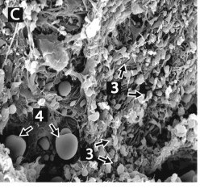
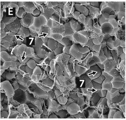
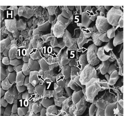
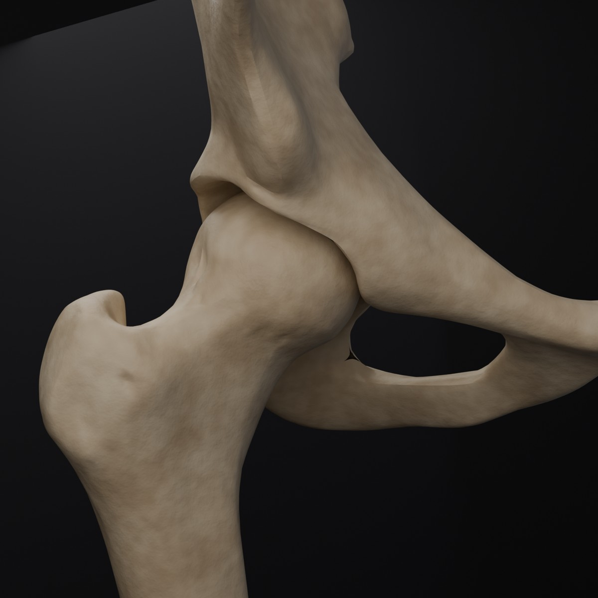
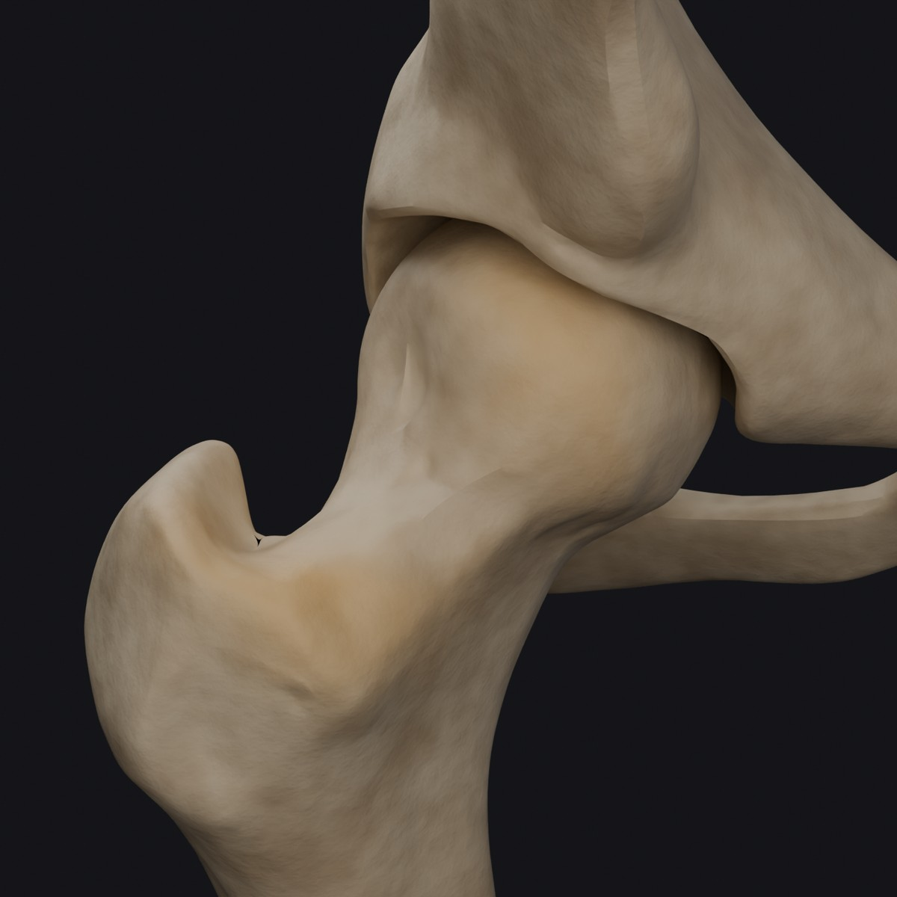
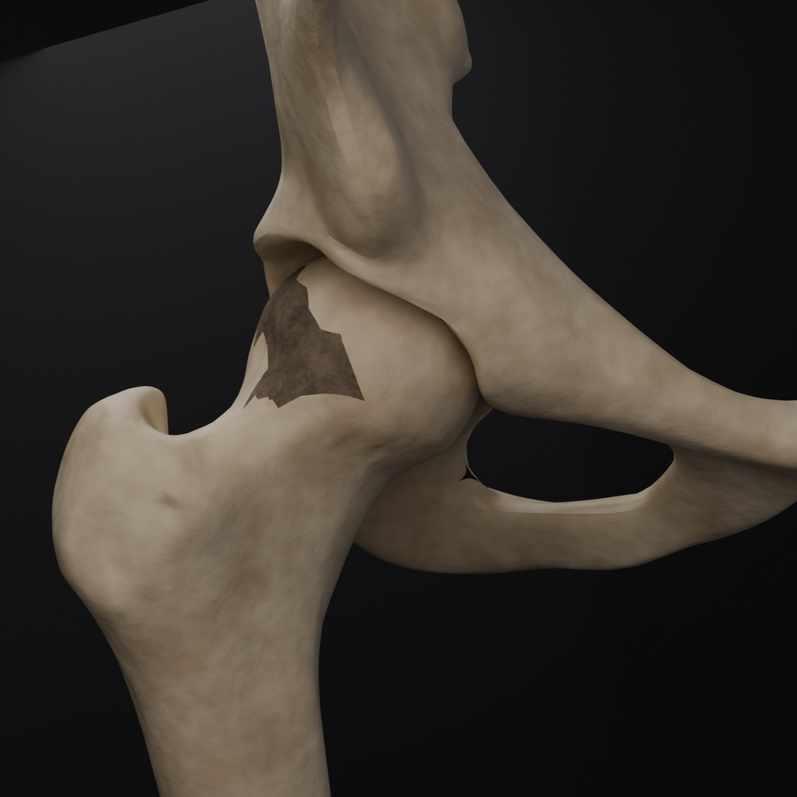
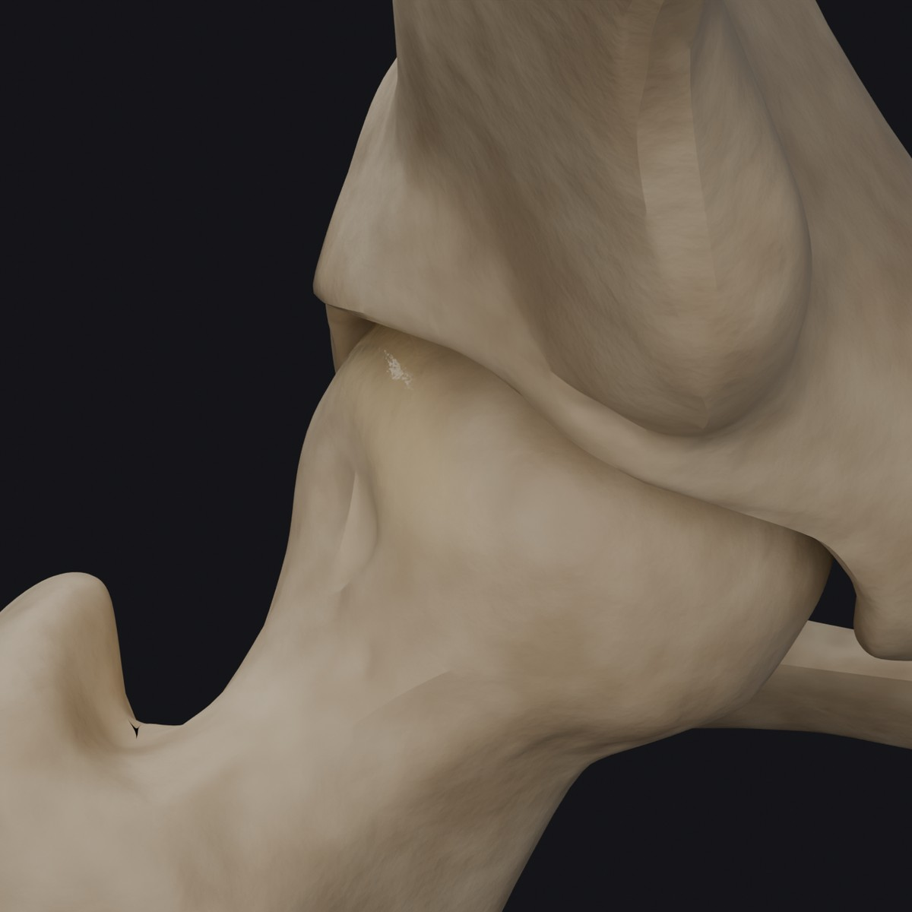
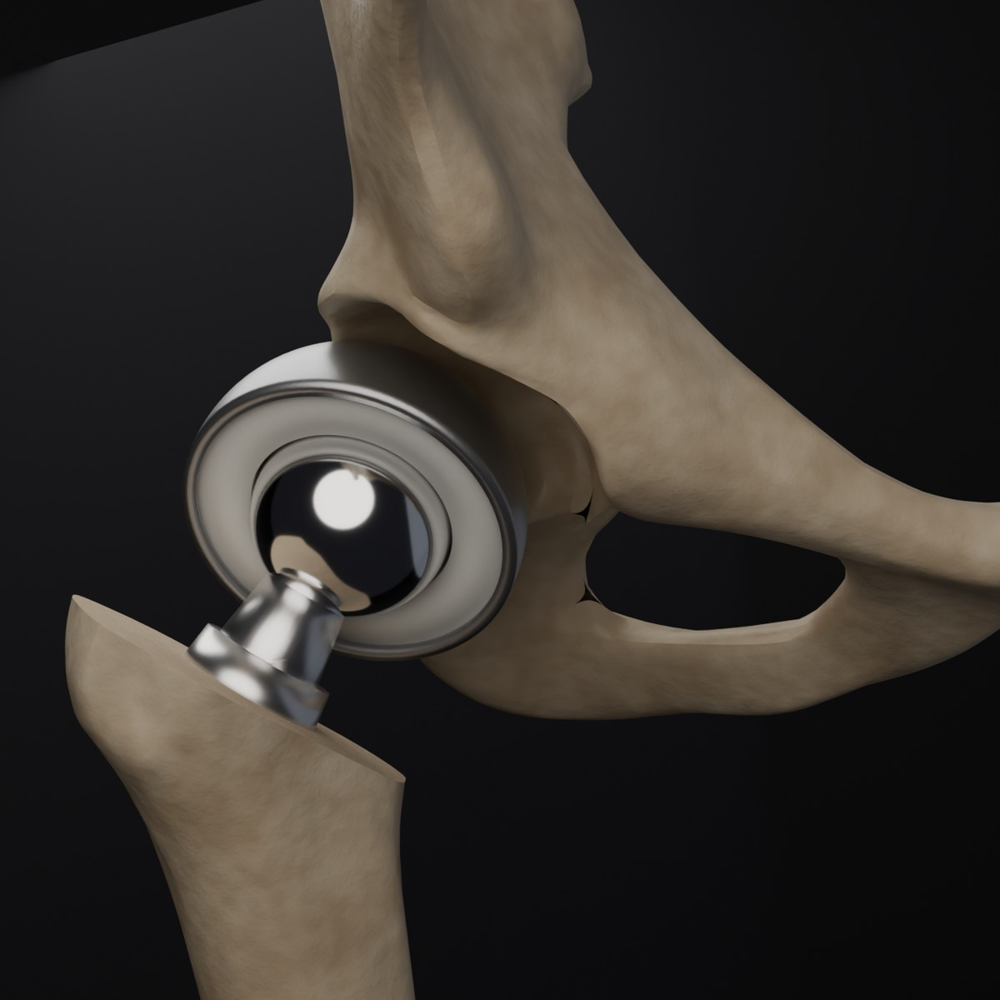

The PM&R Files is built by a PM&R resident physician who came to medicine from outside the field, and who still remembers exactly what medical evidence looks like to everyone else: locked behind jargon, paywalls, and papers written for other researchers. The science was sound. The communication was not, and people were left making real decisions about their own bodies from whatever fragments they could piece together. These essays work the other way: take something complicated and make it digestible without making it smaller. The PM&R Files treats readers as smart, shows the actual numbers behind rehabilitation medicine, says plainly what the evidence cannot prove, and opens a field that too often talks only to itself.
A PM&R resident physician
Rehabilitation is practiced, not just prescribed. Homepage images are AI-generated illustrations; essay imagery remains sourced photography and data.
The PM&R Files · Essay 17
Every Prescription Is a Bet
Medicine runs on odds. This essay reads one prescription the way an actuary would: as a priced bet on a single life.
A PM&R resident physician
The opening slip · Aspirin, priced both waysASCEND · 7.4 years
91people treated for one serious vascular event prevented
111people treated for one major bleed caused
One trial, one population: 15,480 people with diabetes, followed for 7.4 years. Serious vascular event was the trial’s own composite: a nonfatal heart attack, a nonfatal stroke or a transient ischemic attack (a brief, stroke-like episode), or death from a vascular cause, with bleeding in the brain counted on the harm side, not in this number. The two counts are different events and are printed separately on purpose; this slip never nets them into one number. The trial’s own verdict: the gains were largely wiped out by the bleeding.
Start with one small white pill: aspirin. The slip above prices that trial both ways, in its own terms. Help and harm, side by side, at nearly the same size.
That is not a fact about aspirin. It is the shape of almost every choice in medicine. Each drug, each test, each operation is a bet: some chance of gain, some chance of loss, and one person who has to live with how it lands.
So here is the claim of this essay. Good medicine is good betting. Not gambling, which is betting blind. Betting with the odds worked out, the stakes priced, and the size of the bet matched to the person in front of you. The field that does this for a living is not medicine. It is actuarial science, the math of pricing risk. Medicine borrowed its tools long ago. It just rarely says so.
A note from the person who wrote this slip. Before medical school, I interned in actuarial consulting and worked as a health care analytics analyst. I priced risk for groups of strangers. Now I treat one person at a time, and the same math keeps showing up at the bedside.
Bet slip No. 17The five fields on every slip
The event
One bad thing, or not, in a set span of time
The odds
How often it strikes people like this patient
The edge
How much the treatment cuts those odds
The price
What the treatment costs in harm
The payout
The number needed to treat: how many people like this one, treated for the stated span, for one extra good outcome on average. An average across a group. It rescues no named individual, and it promises nobody in particular anything.
Scroll · the slip fills in
Slip section 01 · The machinery
First, the odds had to be invented
The tools on this slip feel like medicine. They are not. They were built to price lives for money, and the dates give it away.
1693
A price list for lives
Edmond Halley, an astronomer, took the birth and death records of one city, Breslau, and built a table: how many people are still alive at each age. The title of his paper says what it was for. It ends with the words “an attempt to ascertain the price of annuities upon lives.” The first life table was a pricing tool.
1825
Risk compounds like interest
Benjamin Gompertz, who worked in insurance, found the law inside the table. The risk of death does not grow in a straight line as we age. It compounds, at a steady rate, the way interest does. He wrote the math down to value life contracts: what a promise to pay is worth when no one knows how long a life will run.
1958
The table learns to lose people
Two statisticians, Edward Kaplan and Paul Meier, fixed the table's weak point. Real patients move away, quit, and get lost. Their method still counts each person fairly up to the day they vanish. It is called the Kaplan-Meier curve, and almost every survival curve in every drug trial since is this table's grandchild.
Hold on to one point. None of this was built to heal. It was built to price. Medicine took the tools over because the tools work. This essay borrows them back for a few pages.
Slip section 02 · The odds machine
Place the bet
Meet the patient on this slip. She has atrial fibrillation, an irregular heartbeat that lets blood pool in the heart, where it can clot. A clot that breaks loose can cause a stroke. A blood thinner cuts that risk a lot. It also makes bleeding more likely. So: bet, or no bet?
The price of the bet hangs on one score. The CHA2DS2-VASc score gives points for heart failure, high blood pressure, diabetes, blood vessel disease, age, and sex, with two points each for age 75 or older and for a past stroke or clot. More points, more risk. Tap a score. The slip reprices at once, in counts of people. It prints no verdict, on purpose: what the two columns are worth against each other is the reader’s call, and the machine ends by asking for it.
Your patient's score
A historical model: warfarin against no treatment, priced from the trials and cohorts assembled by Hart 2007 and Friberg 2012. Warfarin is not the blood thinner most people with this condition start today.
The cohort on this slip: 1,000 people with a score of 2, each treated for one year. Every count below is per that cohort and that year.
Stroke risk, no treatment2.2% a year
Strokes prevented by warfarin14.1 per 1,000per year of treatment
Major bleeds outside the skull added (extracranial)Under 3 per 1,000per year, at every score. One pooled trial average, laid evenly over every score because that is how this model is built; a real person’s bleeding risk varies. Bleeds inside the skull are not in this count: in the pooled trials they ran about 3 per 1,000 people per year on warfarin, against about 1 per 1,000 without it.
Prevented
Bleeds
The two bars are counted separately on purpose. A prevented stroke and an added bleed are different events, and this slip never nets them into one number.
Plainly: of 1,000 people with a score of 2, treated for one year, the drug prevents about 14 strokes.
71patient-years of warfarin per stroke prevented, on average. The number needed to treat for this historical model: an average across the group, not a rescued individual.Illustrative model, not a personal treatment recommendation. This is a model output, following the rates printed on this slip. No verdict is printed, because the two columns are different events and the trade between them is a values call, not an arithmetic one.
The math on this slip: benefit = baseline risk × 64%. Warfarin, the blood thinner in the trials, cut stroke risk by 64% (Hart 2007). The baselines come from 182,678 people with this condition in Sweden (Friberg 2012). The bleeding cost is one pooled trial average, under 0.3% a year in major bleeds outside the skull, laid evenly over every score, because that is how this model is built. A real person’s bleeding risk is not flat: age, blood pressure, other medicines, and alcohol all move it.
How current guidance reads a score (2023 ACC/AHA/ACCP/HRS atrial fibrillation guideline): the decision runs on estimated yearly thromboembolic risk, not on the score alone. At an estimated risk of 2% a year or more, anticoagulation is recommended. At 1% to under 2%, it is reasonable to consider. Because the score hands women a point for sex while the guideline treats sex as a risk modifier rather than a risk factor, the recommend side starts at a score of 2 in men and 3 in women. A woman at score 2 sits in the consider band, not across an automatic line. Current guidance also prefers the newer anticoagulants over warfarin for most people. This machine keeps pricing warfarin, because warfarin is the drug the trials tested against nothing.
Warfarin for atrial fibrillation, by CHA2DS2-VASc score. Baselines: Friberg 2012. Effect: Hart 2007.
Score
Stroke risk a year, no treatment
With warfarin
Strokes prevented per 1,000 treated for a year
Number needed to treat, patient-years
0
0.2%
0.07%
1.3
781
1
0.6%
0.22%
3.8
260
2
2.2%
0.79%
14.1
71
3
3.2%
1.15%
20.5
49
4
4.8%
1.73%
30.7
33
5
7.2%
2.59%
46.1
22
6
9.7%
3.49%
62.1
16
7
11.2%
4.03%
71.7
14
8
10.8%
3.89%
69.1
14
9
12.2%
4.39%
78.1
13
Scores 7 to 9 rest on far fewer people, and the Swedish rates wobble there: 11.2, 10.8, then 12.2 percent. Read those stops with care. The harm column is not in this table because the model holds it flat: under 3 major bleeds outside the skull added per 1,000 people treated for a year, at every score.
The last line of the slip is yours
The counts do not read themselves. Which event frightens you more changes what the same numbers argue for. Pick the fear that sounds like yours, and read the slip that way. Neither pick stamps a verdict on the machine. It changes the explanation, which is where values belong.
Slip section 03 · Two more slips
The drug never changes. The odds do.
Slip twoA statin, priced over ten years
A statin lowers LDL cholesterol. For each 1 mmol/L drop, the pooled trials find about 21% fewer major vascular events: heart attacks, strokes, and deaths from them (CTT 2005; 90,056 people in 14 trials). Now hold the drug still and move the person.
10 year risk 2.5%NNT 191
10 year risk 5%NNT 95
10 year risk 7.5%NNT 64The old US line (2013, kept in 2018)
10 year risk 10%NNT 48
10 year risk 20%NNT 24
10 year risk 30%NNT 16
Same pill. Same 21%. The only thing that moved was who sat in the chair.
Two labels belong on this slip. First, it is a model, not a measurement: it applies the CTT average, a 21% cut for each 1 mmol/L of LDL lowering, to a person’s 10 year risk of the trials’ composite endpoint (major vascular events: heart attacks, strokes, and deaths from them), and it assumes the cut is the same at every starting risk. Second, the line in the list has moved. The 7.5% threshold comes from the 2013 US cholesterol guideline, kept in 2018. The 2026 ACC/AHA dyslipidemia guideline replaced the risk calculator itself (the PREVENT-ASCVD equations in place of the pooled cohort equations) and now recommends a statin from a 10 year risk of 5%, with treatment worth considering from 3% when risk enhancing factors are present. The arithmetic on this slip has not changed. Where the house posts its line has.
The harm column is real, and its clock runs at a different speed. Treat 255 people for 4 years and about one extra case of diabetes shows up (Sattar 2010). The benefit above is priced over 10 years, the harm over 4. A fair slip shows both clocks.
Slip threeAspirin, the bet that cancels itself
Aspirin went to three big trials in 2018, in three kinds of people. Same drug each time. Three answers.
ASCEND15,480 people with diabetes, followed 7.4 years. Prevented: one serious vascular event per 91 treated (the composite: a nonfatal heart attack, a nonfatal stroke or TIA, or a vascular death, with bleeds in the brain counted as harm, not here). Caused: one major bleed per 111. The trial's own verdict: the gains were largely wiped out by the bleeding.
ASPREE19,114 healthy older adults, median age 74. Prevented: nothing that could be measured. Caused: one extra major bleed per 100 treated.
ARRIVE12,546 adults at moderate risk. Prevented: nothing clear. Caused: one extra gut bleed per 196 treated.
Three tables, one drug. The people, and their starting odds, did all the talking.
Slip section 04 · The house rules
Every house posts its limits
Casinos post their limits. Medicine posts its own, in guidelines, and they do the same job: they say where a bet turns worth placing, for the average person at the table.
1975Medicine wrote the rule down early. Stephen Pauker and Jerome Kassirer showed that each treatment has a break-even point: a chance of disease above which treating wins, and below which it loses. The point is set by the ratio of harm to benefit. Every rule below is that one idea, dressed for a clinic.
2The stroke slip used to get its line at a score of 2. The 2023 US atrial fibrillation guideline draws it by estimated yearly risk instead: recommend at about 2% a year or more, consider from 1%. Because sex counts as a modifier, the recommend side starts at a score of 2 in men and 3 in women, and a woman at score 2 is in the consider band. Lines move as evidence does.
7.5%The US cholesterol guideline set its line at a 10 year risk of 7.5% in 2013, and kept it in 2018. The 2026 guideline moved it: a statin is now recommended from 5%, worth considering from 3% with risk enhancers, under a newer risk calculator. An old line is a history lesson, not a rule.
3% · 20%Bone care runs the same play. Treat when the 10 year chance of a hip fracture hits 3%, or of a major fracture 20%. That is the FRAX score, as used in US practice.
£Then the house prices the payout itself. One QALY is one year lived in full health. For years, NICE in England called a treatment good value at £20,000 to £30,000 per QALY. In April 2026, that line rose to £25,000 to £35,000. In the US, the review group ICER uses $100,000 to $150,000 per QALY as its yardstick. Figures checked October 2026.
None of these lines is a law of nature. A committee set each one, the way an underwriter sets the top price for a class of risk. Knowing the line is posted is the first step. Knowing when your patient should cross it is the craft.
Slip section 05 · The fine print
Read the fine print. It is the honest part.
Every real slip has fine print, and most people skip it. Do not. It is set in full size here, on purpose.
Prices vary by book
Across 17 studies of people with atrial fibrillation, the yearly stroke rate at a score of 0 ran from 0 to 2.41 percent. At a score of 2, it ran from about 0.48 to 7.84 percent. The odds on this slip come from one large Swedish group. Your patient may belong to a pricier book, or a cheaper one.
No one is an average
Every risk number is a price quoted for a class of people. You belong to many classes at once: your age group, your sex, people with your blood pressure, people who run marathons. Each class quotes a different price, and no rule can say which class was the right one. The philosopher Hans Reichenbach named this in 1949: the problem of the reference class. A score does not solve it. It picks a class in an orderly way. And the narrower the class, the thinner the data under its price.
Prices can be wrong
When two researchers tested the pooled cohort equations, the formulas US doctors use to price heart risk, on three large groups, the formulas overshot real risk by 75 to 150 percent. A wrong starting price flows through clean math and comes out as a wrong bet, with each step looking exact.
The score is a blunt tool
The stroke score sorts people only fairly well. Its accuracy score, called the c statistic, is about 0.61, where 0.5 is a coin flip and 1.0 is perfect. It still earns its place: a blunt price, stated out loud, beats a guess.
The big number hides its clock
The number needed to treat hides its time frame and its doubt. An event stopped in year one and an event pushed to year nine count the same inside a fixed window. And when a trial's benefit could be zero, as in the ARRIVE aspirin trial, the number runs off through infinity. A neat figure printed there is not a small benefit. It is no measured benefit at all.
The 64% is an assumption
This slip treats warfarin's 64% cut as the same at every score. The large reviews behind it found the cut roughly steady across groups. Roughly steady is an assumption, not a law, and the whole slip leans on it.
Newer drugs, modeled odds
Newer blood thinners beat warfarin by a further 19% in relative terms (Ruff 2014). No trial has tested them against no treatment at all. So any figure for them against nothing is built by chaining two reviews together. This slip prices warfarin only, because warfarin was tested against nothing.
You have to live to collect
A ten year bet assumes the person lives ten years to collect it. Other risks compete, and with age they compound. Gompertz again. Most bedside numbers leave this out. The bone score, FRAX, is one of the few that builds it in.
The last line is yours
The last line of the slip is not about risk. It is about value. The math treats each outcome as the same coin. Patients do not. When researchers asked people living with spinal cord injury what they would want back first, their order was not the one their doctors guessed. That story is Essay 15, What Would You Want Back? The actuary can price the risk. Only the patient can price the outcome. A good slip carries both prices.
The patient's price: ____________________
Nothing here is advice for any one person. These numbers describe groups of people in published studies. A bet this size belongs to a patient and a clinician, with the slip on the table between them.
Sources
Halley E. An estimate of the degrees of the mortality of mankind, drawn from curious tables of the births and funerals at the city of Breslaw; with an attempt to ascertain the price of annuities upon lives. Philosophical Transactions of the Royal Society. 1693. View source
Gompertz B. On the nature of the function expressive of the law of human mortality, and on a new mode of determining the value of life contingencies. Philosophical Transactions of the Royal Society. 1825. View source
Kaplan EL, Meier P. Nonparametric estimation from incomplete observations. Journal of the American Statistical Association. 1958. View source
Laupacis A, Sackett DL, Roberts RS. An assessment of clinically useful measures of the consequences of treatment. New England Journal of Medicine. 1988. Where the number needed to treat comes from. View source
Gigerenzer G, Edwards A. Simple tools for understanding risks: from innumeracy to insight. BMJ. 2003. Why this essay pairs every percent with a count of people. View source
Hart RG, Pearce LA, Aguilar MI. Meta-analysis: antithrombotic therapy to prevent stroke in patients who have nonvalvular atrial fibrillation. Annals of Internal Medicine. 2007. Warfarin's 64% relative cut, and its bleeding cost of under 0.3% a year. View source
Friberg L, Rosenqvist M, Lip GYH. Evaluation of risk stratification schemes for ischaemic stroke in 182,678 patients with atrial fibrillation: the Swedish Atrial Fibrillation cohort study. European Heart Journal. 2012. The baseline rates on the slip. View source
Ruff CT, et al. Comparison of the efficacy and safety of new oral anticoagulants with warfarin in patients with atrial fibrillation: a meta-analysis of randomised trials. Lancet. 2014. View source
Cholesterol Treatment Trialists' Collaboration. Efficacy and safety of cholesterol-lowering treatment: prospective meta-analysis of data from 90,056 participants in 14 randomised trials of statins. Lancet. 2005. View source
Sattar N, et al. Statins and risk of incident diabetes: a collaborative meta-analysis of randomised statin trials. Lancet. 2010. View source
ASCEND Study Collaborative Group. Effects of aspirin for primary prevention in persons with diabetes mellitus. New England Journal of Medicine. 2018. View source
McNeil JJ, et al. Effect of aspirin on disability-free survival in the healthy elderly (ASPREE). New England Journal of Medicine. 2018. View source
Gaziano JM, et al. Use of aspirin to reduce risk of initial vascular events in patients at moderate risk of cardiovascular disease (ARRIVE). Lancet. 2018. View source
Stone NJ, et al. 2013 ACC/AHA guideline on the treatment of blood cholesterol. Circulation. 2014; and Grundy SM, et al. 2018 AHA/ACC multisociety cholesterol guideline. Circulation. 2019. The 7.5% line and the risk bands. View the 2013 guidelineView the 2018 guideline
Joglar JA, et al. 2023 ACC/AHA/ACCP/HRS guideline for the diagnosis and management of atrial fibrillation. Circulation. 2024. Anticoagulation decided by estimated annual thromboembolic risk: recommended at 2% a year or more (a CHA2DS2-VASc score of 2 in men, 3 in women), reasonable to consider at 1% to under 2%; sex is a risk modifier. View source
Blumenthal RS, et al. 2026 ACC/AHA/multisociety guideline on the management of dyslipidemia. Circulation. 2026. The PREVENT-ASCVD equations replace the pooled cohort equations; a statin is recommended from a 10 year risk of 5% and considered from 3% with risk enhancers. View source
Pauker SG, Kassirer JP. Therapeutic decision making: a cost-benefit analysis. New England Journal of Medicine. 1975; and The threshold approach to clinical decision making. New England Journal of Medicine. 1980. View the 1975 paperView the 1980 paper
Ridker PM, Cook NR. Statins: new American guidelines for prevention of cardiovascular disease. Lancet. 2013. The overprediction test of the pooled cohort equations. View source
Quinn GR, et al. Wide variation in reported rates of stroke across cohorts of patients with atrial fibrillation. Circulation. 2017. The 17 cohorts behind the fine print. View source
Christensen PM, Kristiansen IS. Number needed to treat: needs treatment with care. Basic and Clinical Pharmacology and Toxicology. 2006. View source
Reichenbach H. The Theory of Probability. 1949; and Hajek A. The reference class problem is your problem too. Synthese. 2007. View the Hajek paper
How the odds machine works: for the score you pick, it takes the Swedish rate of strokes per year with no treatment (Friberg 2012), cuts it by warfarin's 64% (Hart 2007), and turns the gap into a number needed to treat. Patient-years is the total time across people: an NNT of 71 means treating 71 people for one year each prevents about one stroke. Bleeding figures are major bleeds outside the skull, the harm Hart measured; bleeds inside the skull sit outside that count (in the pooled trials they rose from about 0.1% to about 0.3% a year on warfarin). Statin figures are model outputs: they apply the CTT's 21% cut per 1 mmol/L of LDL lowering to 10 year risks of the CTT composite endpoint (major vascular events), assuming the cut holds at every starting risk. The statin benefit is priced over 10 years and its diabetes harm over 4; both clocks are printed where the numbers appear.
The PM&R Files · Essay 18
The Table That Prices a Person
Ask how long a person will live after a spinal cord injury, and the answer comes from a table. That table was built to set prices. This essay opens it up: how the years are counted, why they stopped growing, and what happens when two honest tables disagree about one life.
By a PM&R resident physician
First, the ground rule, because everything after it could be misread. A person is not a cost. Nobody's mother, brother, patient or client is a line in a ledger, and the years counted in this essay belong to people with names, homes and plans. But the care those years need has to be paid for, and it is paid for with numbers like the ones on this page. That is why the honest move is to look at the numbers directly: who makes them, who reads them, and how much care they fund. Often, the person arguing for the bigger number is the patient's own advocate, asking the system to fund more years of life at home.
One more promise. Where this essay is sharp, it is sharp about the machinery: the tables, the shortcuts, the assumptions. Never about the people inside the numbers. Essay 02 used this table's outputs, the survival curves themselves. This essay is about the machine that makes them, and the uses waiting downstream.
Scroll · Seven entries in the ledger
Entry one · The Object
The life table was a pricing tool before it was a medical one
In 1693, Edmond Halley published a table of deaths from the city of Breslau and did something new with it. He worked out how long people at each age could expect to live, and his paper's title says why: to find the price of annuities on lives. An annuity pays you every year until you die, so its fair price is your expected years, turned into money. The life table, the form at the heart of this essay, was built as an actuarial instrument: a machine for pricing time.
Medicine borrowed it later. When a doctor today says a patient has a life expectancy of so many years, the number comes out of Halley's machine, fed with modern data. Spinal cord injury is where the machine does some of its most serious modern work, because the stakes are long. Care after a cord injury runs for decades, and decades have to be estimated before they can be funded, insured, planned for or argued over.
So this number, expected years of life after injury, lives two lives at once. In the clinic it is a prognosis, spoken softly. Everywhere else it is an input: to a care plan, a court case, a settlement, an insurance file. The next entries follow the number at work.
Entry two · The Machine
How a life expectancy is actually built
Start with people, counted over time. Researchers follow a large group of injured people and log person-years: one person followed for one year is one person-year of exposure to the risk of dying. At each age, divide the deaths by the person-years and you get that age’s central mortality rate, written m(x): deaths per year of exposure. From that rate comes q(x), the probability that a person who reaches that age dies within the year. Then comes Halley’s move. Take a made up cohort of 100,000 people, written l(x), and run it through the age by age probabilities. Each year some die, d(x), and the rest live on. Add up all the years the cohort lives, column T(x), and divide by the number who started. That quotient is e(x): the life expectancy. It is not a prediction about one person. It is the average length of a whole survival curve, summed.
There is a second dial on the machine, the standardized mortality ratio, or SMR. It compares deaths in the injury group with the deaths expected if that group died at general population rates. An SMR of 1.0 means the same mortality. After cord injury the model based ratios run from 1.86 for paraplegia down the cord to 4.75 for the highest complete injuries, C1 to C3. Insurance underwriters price in this same unit; above standard mortality, they charge table ratings. The research paper and the underwriting manual are denominated in the same currency.
Exhibit · The machine checks another group's workSpinal Cord, 2013
In 2013, Shavelle, Strauss and Brooks took an Australian study's own published death rates and rebuilt its life table in the open, column by column: l(x), d(x), q(x), m(x), L(x), T(x), e(x). Same data, second build. For the C5 to C8 group, life expectancy as a percent of normal, published against recomputed:
Age 25
74% → 66%
Age 35
72% → 62%
Age 45
68% → 57%
Age 55
66% → 51%
Age 65
65% → 52%
Their sentence: the published figures were systematically higher than the ones computed from the same data. The gap was not fraud; it was method, smoothing choices inside the build. That is the machine's first lesson. A life expectancy is an output of stated choices, not a reading like a blood sodium.
Entry three · The Grid and the Clock
The table everyone quotes, and the starting line hidden inside it
The numbers most often quoted come from the National Spinal Cord Injury Statistical Center, the NSCISC, which runs the Model Systems database. Its 2026 grid gives expected years of life left, by age at injury and injury type, for people who have already survived at least one year. Surviving that first year matters, and the grid is honest about it.
Injured at 20
Expected years left
Share of no injury
No spinal cord injury
59.2
100%
Motor functional (AIS D)
51.4
87%
Paraplegia (AIS A to C)
43.8
74%
Low tetraplegia, C5 to C8
38.6
65%
High tetraplegia, C1 to C4
32.0
54%
Ventilator dependent, any level
16.5
28%
Shares are calculated from the published grid (NSCISC Facts and Figures, 2026 edition), not printed on the sheet itself.
Now the clock. The same grid is also published from an earlier starting line: survival of just the first 24 hours. For a ventilator dependent 20 year old, the one year figure is 16.5 years. The 24 hour figure is 9.8 years. Nothing about the person changed; the estimate grew by about two thirds because the clock started after the most dangerous year. Every table in this field is conditional, true only from its stated starting line. Quote the wrong conditioning and you have priced the wrong life, politely, with a citation.
Read the grid again with that in mind and it becomes two facts at once. It is the best map the field has. And it is a set of decisions, about who counts and from when, wearing the calm face of a table.
Entry four · The Plateau
The gains stopped at the second anniversary, forty years ago
Everyone assumes survival after injury keeps improving. For the first year, it did, hugely. The adjusted odds of dying in the first year after injury fell by about two thirds between the 1970s and the late 1990s. Better trauma care, better surgery, better early medicine: real gains, in year one.
After the first anniversary, the line goes flat. DeVivo's 2007 Guttmann lecture said it in one sentence: first year mortality rates improved, but longer term mortality rates showed no improvement since 1982. The largest study then closed the question: 31,531 people who had survived two years, followed across 1973 to 2012. Adjusted odds of dying, against the 1970s, were 0.802 in the 1980s, 0.826 in 1990 to 2004, and 0.857 in 2005 to 2012. The title of the paper asks whether long term survival has improved. Its conclusion: long term survival has not changed over the past 30 years.
The cause of death table explains the shape. In the early decades of the British fifty year series, urinary causes ranked first among deaths; by the last two decades they had fallen to fourth, beaten back by better bladder care and antibiotics. What replaced them at the top has proven stubborn: in the current NSCISC figures, respiratory diseases lead at 19.6 percent of deaths after the first year, with infections, mostly septicemia, at 13.1 percent. The field beat back the kidney deaths and transformed the first year. The plateau is what is left.
So the grid in Entry three is not a snapshot of a rising curve. It is a plateau that has held since roughly the early 1980s, which is one reason the fights over its exact values, later in this essay, matter so much. When a number stops moving, every year of it gets argued over.
Entry five · The Two Tables Machine
Two published tables. Two reference cases. Watch the price move.
Here is the dispute you can hold. The NSCISC grid is one published source. The Life Expectancy Project, the research group of Strauss, Shavelle and Brooks, publishes another, built with a person-year model on the same Model Systems database. They do not publish the same reference case, and this machine will not pretend they do. Both definitions are printed beside their numbers, in full. What the machine prices is the published disagreement itself: the gap a negotiation actually faces when each side arrives holding a different published table.
Every dollar below is years of care at home: nursing, therapy, equipment, help with the day. The dollars are shown because care is funded in dollars. The method is printed on the same screen as the money, every time.
Age at injury (NSCISC grid stops)
Injury profile
Tables to show
Discount rate (present value)
Table A · NSCISC grid, 2026 edition
43.8
Reference case: injured at age 20, survived at least 1 year. Both sexes and all races pooled. Source: NSCISC Facts and Figures, 2026.
Table B · Life Expectancy Project model
37.1
Reference case: a 25 year old white man, injured 3 years ago, nonviolent cause. Source: Shavelle et al., 2015, model table.
Read the gap as the published disagreement, not as two predictions about one named person. The two sources define their reference cases differently, and every element of the gap traces to those stated choices: age basis, starting line, who is in the class, data era. Where the reference cases come closest, ventilator dependence at 20, the tables nearly agree.
Entry six · The Readers
One number, four documents
The clinician
In the clinic the number is a prognosis, and it is handled with care. It shapes honest talk about the future: what to watch, what to prevent, what the years ahead usually hold. A good clinician quotes it as what it is, an average over a group, and then looks at the person in front of them, whose own risks may pull them well off the group line. Entry seven prices that gap.
The life care planner
The planner turns the number into a multiplier. A plan lists what a person will need, year by year: care hours, therapy, equipment, supplies, home changes. Then the table sets how many years of it to fund. One year of assumed life, at NSCISC's published cost for paraplegia of $93,409 a year, is $93,409 of plan. The planner is where the patient's own case for more funded years is usually made, line by line, in the open.
The courtroom
In a court case the number becomes an exhibit, and the two sides arrive with different published tables, as Entry five showed. The law knows the weakness and says so: forensic economics guidance states that a mortality table life expectancy is not conclusive, is an average, and is to be weighed with other evidence about this person's probable life. The groups who publish the tables disclose that they consult as expert witnesses. The dispute in print is what that testimony is built from.
The underwriter and the annuity desk
Read the table backwards and you get a rated age. When an injured person's settlement is placed as an annuity, company underwriters review the medical records and assign the age they will price as: the statistical age, not the birthday. A broker example: a person of 30, priced as 55 or 60 with severe injuries. A life annuity on a shorter expected life costs less for the same monthly payment, so the same verdict that would raise a life insurance price lowers an annuity's. Actuarial testing on about 350,000 real substandard settlement annuities found people lived longer than their rated ages implied, especially where the rate up was 20 years or more. For life insurance itself, the verified SCI figures are a reinsurer's experience data: overall mortality 1.85 times standard, up to 6.7 times for complete cervical injuries. Precise table letters for SCI, if your broker quotes one, are not published in sources this essay can stand behind, so none are printed here.
Entry seven · The Fine Print
What the table cannot see
It sees about 6 percent of the injured. The NSCISC database page currently estimates that it captures data from about 6 percent of new spinal cord injury cases in the United States, treated at federally funded Model Systems centers. The authors are plain about it: the database is not population based, and its patients may have greater needs and more complications than people treated elsewhere. Every figure in this essay rests on that selected slice.
It misses some deaths, so it errs long. Deaths are traced largely through the Social Security Death Index, with a stated sensitivity of 92.4 percent in this database. The 2015 authors conclude their results are, if anything, overestimates of survival. The ventilator table shows what that costs: published at 22 years for a 20 year old in 2006, revised to 17 in the 2024 update, largely because deaths had been reported late. Finding the missing deaths repriced the same future by about $845,738 at a 2 percent discount rate, using the high tetraplegia cost as the proxy the memo for this essay specifies. Data hygiene, as a seven figure event.
The ratio can move when the patient does not. Take one fixed profile: 30 year old white men with paraplegia, at least 3 years post injury. Its SMR was 4.1 computed in 1995 and 5.3 computed in 2005. The injury group's mortality had not risen. The general population's had fallen, so the ratio worsened around a standing patient. SMRs are not portable across calendar time, and any table built by holding one constant buys its simplicity with someone else's years.
And it cannot see the person. This is Essay 17's warning, one level up: a table prices a reference class, and the patient in front of you is not a class. The modifier research prices the distance. In one prospective analysis, a 20 year old man with a C1 to C4 injury and no risk behaviours had an estimated life expectancy of 43.03 years. At a pack of cigarettes a day or more, the estimate was 33.74 years: one habit, 9.29 years. Household income moves it by a decade too: at age 20, for C1 to C4 males, an estimated 29.22 years at low income against 41.41 at high income. The flagship database does not even collect some of these variables. Its authors list them as confounders it cannot see.
None of this makes the table useless. It makes it a bet, stated in years, about a group, used to fund a person. The discipline is to keep all three parts of that sentence in view at once.
The table will keep being read, because the care has to be funded somehow, and an honest table funds more of it, more fairly, than a guess. But hold the last fact beside all the arithmetic. What the funded years are for is not in any column: mornings at home instead of an institution, work, family, an ordinary life defended hour by funded hour. Essay 15 asked people living with spinal cord injury what they would want back, and the answers were capabilities, hands, continence, sensation, never a number. So price the care carefully. Argue for the bigger table when the bigger table is true. And never mistake the price for the person it is meant to serve.
Sources
Halley E. An estimate of the degrees of the mortality of mankind, with an attempt to ascertain the price of annuities upon lives. Philosophical Transactions. 1693;17:596 to 610.
National Spinal Cord Injury Statistical Center. Traumatic Spinal Cord Injury Facts and Figures at a Glance. University of Alabama at Birmingham, 2026 (life expectancy grid, causes of death, yearly and lifetime costs in 2025 dollars).
National Spinal Cord Injury Statistical Center. National SCI Database page, sites.uab.edu/nscisc (capture estimate, about 6 percent of new cases, current phrasing).
DeVivo MJ. Trends in spinal cord injury rehabilitation outcomes from model systems in the United States: 1973-2006. Spinal Cord. 2007;45(11):713 to 721.
DeVivo MJ, Krause JS, Lammertse DP. Recent trends in mortality and causes of death among persons with spinal cord injury. Arch Phys Med Rehabil. 1999;80(11):1411 to 1419.
Strauss DJ, DeVivo MJ, Paculdo DR, Shavelle RM. Trends in life expectancy after spinal cord injury. Arch Phys Med Rehabil. 2006;87(8):1079 to 1085.
Shavelle RM, DeVivo MJ, Brooks JC, Strauss DJ, Paculdo DR. Improvements in long-term survival after spinal cord injury? Arch Phys Med Rehabil. 2015;96(4):645 to 651 (SMR method and worked example, model life expectancy table, limitations, expert witness disclosure).
Shavelle R, Strauss D, Brooks J. Discrepancies in the estimates of life expectancy after SCI. Spinal Cord. 2013;51(12):937 (recomputed life table and percentages).
Frankel HL, et al. Long-term survival after spinal cord injury (50 year series). Spinal Cord. 1998;36:266 to 274.
Shavelle RM, DeVivo MJ, Strauss DJ, Paculdo DR, Lammertse DP, Day SM. Long-term survival of persons ventilator dependent after spinal cord injury. J Spinal Cord Med. 2006;29(5):511 to 519.
Shavelle RM, DeVivo MJ, Brooks JC, Strauss DJ. Update on the long-term survival of persons who are ventilator dependent after spinal cord injury. J Spinal Cord Med. 2024;47(3):459 to 460 (revised estimate, 17 years at age 20; late reported deaths).
DeVivo MJ, Savic G, Frankel HL, et al. Comparison of statistical methods for calculating life expectancy after spinal cord injury. Spinal Cord. 2018;56(7):666 to 673.
Krause JS, Saunders LL. Risk of mortality and life expectancy after spinal cord injury: the role of health behaviors and participation. Top Spinal Cord Inj Rehabil. 2010;16(2):53 to 60 (smoking and life expectancy estimates).
Krause JS, Saunders LL. Life expectancy estimates in the life care plan: accounting for economic factors. J Life Care Plan. 2010 (income and life expectancy estimates).
Klein G, Denker C. Substandard Structured Settlement Annuities, Best Estimate Mortality. Milliman white paper, November 2022 (professional actuarial source; rated age constructions and realized mortality on about 350,000 exposures).
Skoog GR, Ciecka JE. Journal of Forensic Economics. 2007;20(3) (mortality table life expectancy is not conclusive).
RGA. On the Risk. 2022 (reinsurer experience data: SCI mortality 1.85 times overall, up to 6.7 times for complete cervical injuries; professional source).
Amicus Settlement Planners. How Medical Underwriting (a Rated Age) Can Help Your Client. 2025; Kaas T. Using Rated Ages to Maximize Structured Settlement Annuity Payouts. 2017 (industry sources, rated age examples).
Method note for the machine in Entry five: present values use the annuity certain simplification, treating the life expectancy as a fixed payment horizon. A full life contingent valuation, weighting each year by the chance of surviving to it, would give lower values. Costs are NSCISC 2026, in 2025 dollars, direct costs only. Ventilator dependent pricing uses the high tetraplegia cost row as a labeled proxy, because NSCISC publishes no ventilator specific cost row.
The PM&R Files · Essay 19
Two Ways to Build a Clot
Blood builds a clot two different ways, and it builds them in two different kinds of river. In a fast artery, the working structure is a plug of platelets. In a slow vein, it is a net of fibrin thrown over trapped red cells. Every blood thinner in the cabinet blocks one of those two structures. Almost every prescribing mistake in this corner of medicine is a drug aimed at the wrong one.
By a PM&R resident physician
This essay explains how the two drug families work and what the trials found. It is teaching, not dosing guidance: no regimen here is a recommendation. The founding measurement comes from a laboratory that pulled real clots out of real people and took them apart under an electron microscope. In coronary artery clots, platelets made up 31.3 percent of the volume. In vein clots, platelets made up 0.4 percent. One careful study, small numbers of specimens, and the cleanest explanation in this essay for why two families of drugs exist at all.
Platelets, share of clot volume · coronary artery31.3%The arterial clot is platelet led. Wall shear where it forms runs roughly 100 to 100,000 per second, among the fastest flow in the body.
Platelets, share of clot volume · vein0.4%The venous clot is 63.4 percent red cells in a fibrin net, formed at shear of only 10 to 100 per second. Platelets are nearly absent.
One honesty note before the machine. The lanes differ in leadership, not in membership. Even the arterial clot is 43.3 percent fibrin, more fibrin than platelet. Read the two lanes as "who is in charge here," not "who is allowed in." The drugs below work on the leadership.
Scroll · The machine, the microscopy, the map, the seams
Panel one · How each structure is built
A plug is assembled. A net is woven.
The platelet plug · primary hemostasis
Adhesion. A torn wall exposes collagen. Von Willebrand factor bridges the collagen to a platelet receptor called GPIb, and passing platelets tether. At arterial speed, this tether is the rate limiting step: nothing stops without it.
Activation. Stuck platelets change shape, sprout projections, and spill the contents of their granules, including ADP.
Amplification. Two chemical shouts recruit the crowd. ADP calls through the P2Y12 receptor. Thromboxane A2, made by the enzyme COX-1, calls the rest and tightens the vessel.
Aggregation. Activation switches on GPIIb/IIIa, the receptor that grips fibrinogen. Fibrinogen bridges platelet to platelet, and the plug grows.
The fibrin net · the cascade
Tissue factor. Injury exposes tissue factor, which meets factor VIIa and starts the enzyme chain. A second, contact driven arm (factors XII, XI, IX, VIII) feeds into the same chain.
Factor Xa. Both arms converge here. Xa, with its partner Va, is the hinge of the whole cascade.
Thrombin. Xa converts prothrombin (factor II) into thrombin (IIa). Thrombin is the foreman: it activates more platelets and more factors upstream.
Fibrin. Thrombin cuts fibrinogen into fibrin strands, which weave through whatever is present, platelets in an artery, red cells in a vein, and set it solid.
The two machines are partners in normal healing and rivals in drug design. Every toggle on the panel below cuts one named step in one of these two lists.
Panel two · The Two Lanes Machine
Run both lanes. Flip a drug. Watch the wrong one fail.
The panel is a diagram of mechanism, drawn to teach. It is not patient data and not a dosing tool. Start an event in either lane, then work the drug rail. Each drug sits at the molecular step it blocks, and its effect, or its failure, plays out in both lanes at once.
Two Lanes · Hemostasis InstrumentSchematic · Not to scale · Not patient data
Artery lane · narrow, fast, platelet ledWall shear about 1,240 /s
Vein lane · wide, slow, fibrin and red cellsWall shear about 62 /s
Artery · plug growth
Vein · net growth
Both lanes are running clean. Start an event, or switch a drug on first and then start one.
Events
Drug rail · each switch sits at its target
What the rail is made of, in one line each. Aspirin silences thromboxane for the life of the platelet. P2Y12 inhibitors mute the ADP call; clopidogrel and prasugrel must be switched on by the liver and bind for good, ticagrelor works as swallowed and lets go. Heparins hand antithrombin its speed: unfractionated chains strike Xa and thrombin about evenly, one to one; the shorter LMWH chains lean on Xa, enoxaparin about 3.8 to 1. Warfarin stops the liver building factors II, VII, IX and X, and works only as the old factors wear out. Xa inhibitors and dabigatran bind their enzyme directly, no middleman.
One thing the rail cannot do: nothing on it dissolves a clot that already exists. These drugs stop new growth and hold the line, and any slow shrinking on the panel is the body's own plasmin clearing the clot once growth is held. Dissolving a clot outright takes a different class of drug, the thrombolytics, at a different bleeding price.
Panel three · The microscopy
Real clots, taken out of real people
The machine above is a drawing. These are not. A team at the University of Pennsylvania extracted fresh human clots, 45 arterial, 25 venous, and 10 pulmonary emboli taken after death, and photographed them under a scanning electron microscope. Three panels from their first figure, cropped, carry the whole argument of this essay.

Arterial thrombus · coronary
Platelet aggregates (marked 3) packed into fibrin, with red cell balloons (4) squeezed inside the mesh. The plug, photographed.
Platelets 31.3% · Fibrin 43.3% · Red cells 17.1%

Venous thrombus
A pavement of polyhedrocytes (7): red cells compressed into tiles by the clot contracting around them. Nearly no platelets anywhere in the frame.
Platelets 0.4% · Fibrin 35.0% · Red cells 63.4%

Pulmonary embolus
The vein clot, travelling. Its recipe mirrors the venous tail it broke from: compressed red cells (7), white cells (5), microvesicles (10).
Platelets 0.8% · Fibrin 41.2% · Red cells 48.6%
Micrographs: Chernysh IN and colleagues, "The distinctive structure and composition of arterial and venous thrombi and pulmonary emboli," Scientific Reports, 2020. Panels C, E and H of Figure 1, cropped from the original. Licensed CC BY 4.0. Composition shares are that study's measurements on the specimens it quantified in depth, quoted as one careful study's findings, not as universal constants. Magnification bar in the original figure: 10 micrometers.
Panel four · The map
Who gets which, and the trial that settled it
Fourteen doors. Behind each one, a condition, the family that wins it, the reason in one line, and the landmark numbers. The caveats are printed on the cards, where they belong.
Heart attack, no stent yet · ACS
Antiplatelet, two at once
A ruptured plaque is a high shear platelet event. Blocking two platelet pathways beats blocking one.
CURE, 2001 · 12,562 patients. Death, heart attack or stroke: 11.4% on aspirin alone, 9.3% with clopidogrel added. Major bleeding rose from 2.7% to 3.7%.
The bill: the bleeding cost arrives immediately, not eventually.
After a drug-eluting stent
Antiplatelet, and duration is a dial
Bare metal in fast blood is a clot surface until the vessel lining grows over it. The question is never whether to run dual therapy, but for how long.
The DAPT Study, 2014 · Extending dual therapy from 12 to 30 months cut stent thrombosis from 1.4% to 0.4%, and death, heart attack or stroke from 5.9% to 4.3%.
The other end of the dial: moderate or severe bleeding rose from 1.6% to 2.5%, and all cause death from 1.5% to 2.0%, a signal driven by deaths outside the heart.
Atrial fibrillation
Anticoagulant
The clot grows in near still blood, pooled in the left atrial appendage. It is a fibrin problem that happens to fire into an artery.
ACTIVE W, 2006 · Stroke, embolism, heart attack or vascular death: 5.60% per year on clopidogrel plus aspirin, 3.93% on warfarin. Major bleeding: 2.42% versus 2.21% per year.
The lesson: aspirin based therapy lost on events and did not even win on bleeding. The full odds treatment of this choice is Essay 17.
Acute deep vein thrombosis or pulmonary embolism
Anticoagulant
Read the microscopy above. A venous clot is 63.4 percent red cells in a fibrin net. There is almost no platelet structure here for an antiplatelet drug to lead against.
The composition itself · Chernysh 2020: platelets are 0.4% of a venous thrombus by volume, against 31.3% in a coronary one.
Honest basis: no serious trial has pitted aspirin against anticoagulation for acute treatment. This verdict is mechanism plus standard of care.
Unprovoked VTE, anticoagulant stopped
Aspirin, second tier
Once the strong drug ends, aspirin still cuts recurrence by about a third relative. Something, honestly labelled as less.
INSPIRE pooled analysis, 2014 · 1,224 patients. Recurrent VTE: 7.5% per year on placebo, 5.1% on aspirin (hazard ratio 0.68), with no significant rise in major bleeding.
Not a substitute: where the risk still justifies the anticoagulant, aspirin is the weaker seatbelt, not the car.
Mechanical heart valve
Warfarin. Only warfarin.
A metal surface in flowing blood generates thrombin around the clock. The modern shortcut was tried here once, carefully, and it hurt people in both directions.
RE-ALIGN, 2013 · 252 patients, stopped early. Stroke: 5% on dabigatran, 0% on warfarin. Major bleeding: 4% versus 2%, every major bleed around the heart.
Aftermath: the regulator contraindicated dabigatran for mechanical valves in December 2012. The leading explanation, that fixed drug levels cannot suppress constant thrombin generation the way a full factor knockdown can, is the field's hypothesis, not settled fact.
Heparin induced thrombocytopenia · HIT
Stop heparin. Anticoagulate another way.
The one place the lanes collide head on: antibodies against heparin and platelet factor 4 switch platelets on, so an anticoagulant causes a platelet driven clot.
Martel meta-analysis, 2005 · HIT occurred in 2.6% of patients on unfractionated heparin versus 0.2% on LMWH, across 15 studies and 7,287 patients.
Never warfarin alone here: its protein C window, Panel five below, can cost a limb. Management is stop every form of heparin and block thrombin by a non heparin route.
Cancer associated thrombosis
LMWH first, then a pill with a gut warning
The injection dethroned warfarin. The pills then matched or beat the injection on clots, and paid for it in the gut.
CLOT, 2003 · Recurrent VTE at six months: 17% on a coumarin, 9% on dalteparin. Hokusai VTE Cancer, 2018: major bleeding 6.9% on edoxaban versus 4.0% on dalteparin, concentrated in gut cancers.
Warfarin's hidden weakness: in CLOT, the warfarin group's INR sat in range only 46 percent of the time. The drug is hardest to run in exactly the sickest patients.
Antiphospholipid syndrome, triple positive
Warfarin
This disease clots in arteries as readily as in veins, and it is the second place where "a DOAC is a DOAC" reasoning failed a randomized test.
TRAPS, 2018 · 120 patients, stopped early. Clotting, major bleeding or vascular death: 19% on rivaroxaban, 3% on warfarin. Thrombotic events alone: 12% versus 0%.
The events: four ischemic strokes and three heart attacks, every one of them on the rivaroxaban arm.
Stable coronary or peripheral artery disease
Both lanes, at partial strength, selectively
The one big win for combination: blocking both systems lightly beat aspirin alone. Swapping one full block for the other did not.
COMPASS, 2017 · 27,395 patients. Cardiovascular death, stroke or heart attack: 5.4% to 4.1% with low dose Xa inhibitor plus aspirin. All cause death: 4.1% to 3.4%. Major bleeding: 1.9% to 3.1%.
Why selectively: a secondary analysis puts the numbers needed to treat and to harm within a dozen of each other, about 154 and 166. No significant rise in fatal or brain bleeding.
Minor stroke or high risk TIA, first hours
Antiplatelet, dual for about 21 days
Early recurrence is platelet driven and front loaded. The benefit lands in the first days; the bleeding risk accrues evenly. Sprint, then step down to one drug.
CHANCE, 2013 · Stroke at 90 days: 11.7% to 8.2% with dual therapy (number needed to treat 29), serious hemorrhage 0.3% in both arms. POINT, 2018: 15 major ischemic events prevented per 1,000 treated, 5 hemorrhages caused.
Populations: CHANCE ran in China; POINT was international and was halted at 84 percent of its planned enrollment.
Long term stroke prevention
One antiplatelet, not two
Run the sprint for years and the arithmetic inverts: the benefit is spent, the bleeding is not.
MATCH, 2004 · 7,599 high risk patients, 18 months. Adding aspirin to clopidogrel: no significant benefit (events 16.7% to 15.7%), while life threatening bleeding rose from 1.3% to 2.6%.
The counterweight card: keep this one beside the CHANCE card. Same two drugs, opposite verdicts, decided entirely by duration.
Warfarin patient needs a procedure
Usually, no bridging
The reflex bridge, a fast anticoagulant covering the days around surgery, was tested against simply stopping and restarting. It bought bleeding and sold nothing.
BRIDGE, 2015 · 1,884 patients. Arterial clots: 0.4% unbridged versus 0.3% bridged, noninferior. Major bleeding: 1.3% versus 3.2%.
Scope, printed on the card: mechanical valves were excluded, and the average CHADS2 score was 2.3, a mostly lower risk group. Rehab services live downstream of this decision after hip fractures and joint replacements.
Doorway · VTE prophylaxis after joint replacement
That fight lives one essay over
Aspirin versus anticoagulant for prevention after joint replacement has its own shelf, its own patients, and nine priced bottles. Nothing is re-derived here.
The first week of warfarin: an anticoagulant that briefly clots
Warfarin stops the liver building clotting factors, but the factors already in the blood leave on their own schedules. The natural anticoagulant protein C has a half-life of about 8 hours. Factor II, the factor that matters most, lasts about 60 hours. For the first days, the brake wears out years before the engine does, and clotting risk briefly rises. That window is the mechanism behind warfarin induced skin necrosis, the reason acute warfarin starts are overlapped with a fast anticoagulant, and the reason warfarin alone in acute HIT can cost a limb.
Protein C · the brake
Factor II · the engine
Bars are drawn to the half-lives, not to a clock: the point is the mismatch. Full antithrombotic effect takes about five days, because it waits on factor II clearing.
The reversal drawer: who has an off switch
Every blocker on the rail raises the same question at 3 a.m.: how do we turn it off? The honest answers form a gradient, and the gradient tracks molecular size.
Protamine, for the heparins
Full for unfractionated heparin. Partial for LMWH: the enoxaparin label states its anti-Xa activity is never completely neutralized by protamine, maximum about 60 percent. None for fondaparinux. Chain length writes the whole row.
Idarucizumab, for dabigatran
An antibody fragment that pulls dabigatran off thrombin. In REVERSE-AD (503 patients), the median maximum reversal within four hours was 100 percent, and the median time to bleeding stopping was 2.5 hours. Single arm study, no comparison group.
Andexanet alfa, for Xa inhibitors (withdrawn in the US)
A decoy Xa protein that soaks up the drug. No longer sold in the United States: in December 2025 the FDA concluded that its risks outweighed its benefits, after postmarketing reports of serious and fatal clotting events, and the maker withdrew it; US sales ended December 22, 2025. The trial evidence below is now historical. In ANNEXA-4 (352 patients), anti-Xa activity fell 92 percent and 82 percent reached good or excellent hemostasis at 12 hours. Single arm: about 10 percent had a clotting event and about 14 percent died within 30 days, in a very sick cohort.
Warfarin's drawer is older and slower: vitamin K refills the blocked pathway over hours to a day, and four factor concentrate replaces factors II, VII, IX and X at once for serious bleeding. Aspirin and the P2Y12 inhibitors have no antidote at all; the off switch is time and new platelets.
Triple therapy: the bill is additive, the benefit is not
Some patients sit on both lanes at once: atrial fibrillation, plus a fresh stent. Three blocks running together sounds like three times the protection. AUGUSTUS (2019, 4,614 patients, everyone on a P2Y12 inhibitor) priced it. Adding aspirin on top roughly doubled major or clinically relevant bleeding, 16.1 percent against 9.0 percent on placebo (hazard ratio 1.89), while death or ischemic events ran 6.5 percent against 7.3 percent, no significant gain. The anticoagulant comparison told the same story from the other side: apixaban bled less than a vitamin K antagonist, 10.5 against 14.7 percent. Each pathway blocked adds its own bleeding tariff while the extra protection shrinks. The modern answer is subtractive: drop the aspirin early, keep the anticoagulant and the P2Y12 inhibitor.
Panel six · The close
The clot you are treating is older than the clot that formed
One last measurement from the microscopy study, and it changes how the whole map feels. In coronary clots, the fibrin share roughly doubles with each hour of ischemia, while the platelet share roughly halves. The aging network packs denser and stiffer, and responds worse to antiplatelet drugs and to clot dissolving therapy. A clot is not a fixed target with a fixed recipe; it is a structure under renovation, converting itself from the platelet's building into fibrin's, hour by hour.
That is the deepest reason the two lanes matter. The drug families are not interchangeable brands of "blood thinner." They are tools aimed at two different materials, and the material mix in front of you depends on where the clot formed and how long it has been there. Fast water, slow water. Plug, net. Get the structure right and the pharmacology mostly chooses itself.
Sources
Chernysh IN, Nagaswami C, Kosolapova S, et al. The distinctive structure and composition of arterial and venous thrombi and pulmonary emboli. Scientific Reports. 2020. PMCID PMC7083848. Open access, CC BY 4.0. Composition, shear ranges, and the hourly aging of coronary thrombi.
OpenStax. Anatomy and Physiology 2e, section 18.5, Hemostasis; Figure 18.14. CC BY 4.0. Plug formation and cascade sequence.
Yusuf S, et al. Effects of clopidogrel in addition to aspirin in patients with acute coronary syndromes without ST-segment elevation (CURE). New England Journal of Medicine. 2001;345:494-502.
Mauri L, et al. Twelve or 30 months of dual antiplatelet therapy after drug-eluting stents (the DAPT Study). New England Journal of Medicine. 2014.
Connolly SJ, et al. Clopidogrel plus aspirin versus oral anticoagulation for atrial fibrillation (ACTIVE W). Lancet. 2006.
Mant J, et al. Warfarin versus aspirin for stroke prevention in an elderly community population with atrial fibrillation (BAFTA). Lancet. 2007.
Connolly SJ, et al. Apixaban versus aspirin in patients unsuitable for vitamin K antagonist therapy (AVERROES). New England Journal of Medicine. 2011.
Simes J, et al. Aspirin for the prevention of recurrent venous thromboembolism: the INSPIRE collaboration. Circulation. 2014. Pooling WARFASA and ASPIRE, New England Journal of Medicine. 2012.
Eikelboom JW, et al. Dabigatran versus warfarin in patients with mechanical heart valves (RE-ALIGN). New England Journal of Medicine. 2013.
Martel N, Lee J, Wells PS. Risk for heparin-induced thrombocytopenia with unfractionated and low-molecular-weight heparin thromboprophylaxis: a meta-analysis. Blood. 2005.
Lee AYY, et al. Low-molecular-weight heparin versus a coumarin for the prevention of recurrent venous thromboembolism in patients with cancer (CLOT). New England Journal of Medicine. 2003.
Raskob GE, et al. Edoxaban for the treatment of cancer-associated venous thromboembolism (Hokusai VTE Cancer). New England Journal of Medicine. 2018.
Young AM, et al. Comparison of an oral factor Xa inhibitor with low molecular weight heparin in patients with cancer with venous thromboembolism (SELECT-D). Journal of Clinical Oncology. 2018.
Pengo V, et al. Rivaroxaban vs warfarin in high-risk patients with antiphospholipid syndrome (TRAPS). Blood. 2018.
Eikelboom JW, et al. Rivaroxaban with or without aspirin in stable cardiovascular disease (COMPASS). New England Journal of Medicine. 2017.
Wang Y, et al. Clopidogrel with aspirin in acute minor stroke or transient ischemic attack (CHANCE). New England Journal of Medicine. 2013.
Johnston SC, et al. Clopidogrel and aspirin in acute ischemic stroke and high-risk TIA (POINT). New England Journal of Medicine. 2018.
Diener HC, et al. Aspirin and clopidogrel compared with clopidogrel alone after recent ischaemic stroke or transient ischaemic attack in high-risk patients (MATCH). Lancet. 2004.
Douketis JD, et al. Perioperative bridging anticoagulation in patients with atrial fibrillation (BRIDGE). New England Journal of Medicine. 2015.
Lopes RD, et al. Antithrombotic therapy after acute coronary syndrome or PCI in atrial fibrillation (AUGUSTUS). New England Journal of Medicine. 2019.
Pollack CV Jr, et al. Idarucizumab for dabigatran reversal: full cohort analysis (REVERSE-AD). New England Journal of Medicine. 2017;377:431-441.
Connolly SJ, et al. Full study report of andexanet alfa for bleeding associated with factor Xa inhibitors (ANNEXA-4). New England Journal of Medicine. 2019.
Enoxaparin package insert, protamine neutralization statement, as quoted in the University of California San Diego anticoagulation guidelines. Warfarin half-lives per Cleveland Clinic warfarin dosing guidance and the review "Paradoxical procoagulant effect of early doses of warfarin," PMC4460341.
Method note: composition percentages come from one laboratory's quantified specimens and are framed that way on the page. The two lanes panel is a schematic of mechanism; its speeds, growth rates and shear readouts are drawn for teaching and are not measurements. Trial numbers are reported as published; numbers needed to treat shown on cards were computed from the published absolute rates and are labelled by their trial.
The PM&R Files · Essay 20 · The Hip
One Ball, Three Ways to Die
The hip is a ball in a socket, and the ball fails three ways: born the wrong shape, starved of blood, or worn down by osteoarthritis, a whole-joint disease. Then comes the replacement, read like an actuary's life table.
By a PM&R resident physician

Specimen · Femoral head in its socket, 3D modelState: whole
Chapter one · The Ball
A marble in a cup, fed by one thin road
The ball is the head of the femur: a near-perfect sphere in a pelvic cup, the acetabulum. Smooth cartilage caps the ball and lines the cup, so the two glide almost without friction; the labrum seals the joint like a gasket.
The ball's weak point is its supply line. Nearly all its blood arrives through branches of the medial femoral circumflex, reaching the top of the head, with no real backup route. A fracture, dislocation, sickled-cell clot, or steroid scarring can cut that road.
25.3%
Lifetime risk of symptomatic hip osteoarthritis by age 85Murphy and colleagues (2010): 3,068 adults; the estimate runs from 21.3% to 29.3%, conditional on living to 85. Symptomatic meant both at once: an x-ray with at least moderate damage (Kellgren and Lawrence grade 2 or higher) plus pain, aching, or stiffness on most days, or groin pain.
Chapter two · Shape
The bump, measured in degrees

Specimen · Head and neck junctionState: cam
A textbook hip meets its neck in a smooth waist, flexing freely. A cam hip fills that waist with extra bone, in young athletes; each deep bend drives the bump into the rim and its cartilage.
Surgeons measure the bump with the alpha angle: between the neck line and the point where the ball's surface stops being round. Drag the angle below; the drawing is a schematic, not a patient scan, and risk figures appear only at published cohort stops.
The Alpha Angle Explorer
Below the cam line · The common shape
The average painless hip: 54.1 degrees.
Most hips live in this range. Cam morphology starts at about 60 degrees, so below that is the ordinary shape of a human hip, not a diagnosis. Above it is still only a shape: femoroacetabular impingement syndrome needs all three, morphology on imaging, groin pain, and clinical signs.
Read any single angle with care: values vary by x-ray view and reader. The largest risk estimate here comes from a cohort with early symptoms already.
The mirror problem is dysplasia: a cup too shallow (center edge angle under 25 degrees) leaves the ball partly uncovered. Rotterdam gives it an odds ratio of 4.3 (2.2 to 8.7) for later hip osteoarthritis, yet only about 3.6% of cases in adults over 55: the cup is rare.
Chapter three · Blood
When the road in fails, the ball dies quietly

Specimen · The weight bearing domeState: necrotic
Avascular necrosis, or osteonecrosis, is the second death: the bone inside the head loses its blood, dies, and loses its shape. For a while nothing shows. Then the dead segment, in the dome, crumples, and a young hip becomes an arthritic one. Once a necrotic hip hurts and is left alone, natural history reviews put collapse at roughly 80 to 85% within about two years.
Trauma is the plainest: a femoral neck fracture or dislocation tears the vessels outright. After a displaced femoral neck fracture is pinned, about 16% develop necrosis within roughly two years. Steroids are the commonest cause without trauma; risk rides with dose, above roughly 40 milligrams of prednisone equivalent a day. Alcohol is third: heavy drinking raises risk with dose. Sickle cell disease and decompression sickness complete the list.
59%
Quiet lesions that declared themselvesHernigou and colleagues followed 105 hips with necrosis that had never hurt, in people treated for the other hip. Untreated, 59% became painful and collapsed; the other 41% stayed quiet for more than five years. The lesions were large, about 53% of the head.
Treatment · Core decompression
A drilled channel, a stage dependent answer
Staging, in plain words: Ficat (x-rays) and ARCO (MRI) grade how much of the dome is dead, and whether it has caved in yet. Castro and Barrack (2000; 688 hips) read as a gradient: at stage I, decompression succeeded in 84% of hips against 61% with nonoperative care; at stage II, no significant advantage; at stage III, results were poor either way. The fine print: nearly all these studies were unrandomized.
Alendronate: Lai (2005) reported only 2 of 29 hips collapsing on the drug against 19 of 25 without it; Chen (2012), double blind and placebo controlled, found nothing (risk ratio 1.15, 0.54 to 2.45). Verdict: unproven. When the dome has collapsed, no drill or pill puts the sphere back.
Chapter four · Wear
The long grind, and what actually slows it

Specimen · Cartilage gone at the domeState: worn
The third death is osteoarthritis, and it is not simple wear from use. It is a whole-joint disease: cartilage, bone, lining, and muscle all change. Care is graded here the way the back pain essay graded its shelf: verdict first, weak evidence labeled as weak.
Works · First line
Exercise therapy
The 2026 Cochrane update (18 trials) gains about 7 points of pain relief and 9 of function (0 to 100), moderate certainty. Against attention control or placebo, pain relief was 6.31 points, with an interval (minus 0.35 to 12.98) that includes no effect; low certainty. Small, real, and the safest thing here still earns first place.
Honest box
Weight loss: believed, not proven, for hips
No randomized trial of weight loss for hip osteoarthritis exists: the flagship diet and exercise trials are knee trials. As a proven hip treatment, it is an extrapolation, labeled as one.
The rest of the shelf
Shots, gels, and pills
A corticosteroid shot beats placebo at three months and not at six (2023 network meta analysis); relief lasts about 12 weeks. NSAIDs are first line; opioids are discouraged. The gel shot (hyaluronic acid) is no better than placebo at three months or saline across 26 weeks, and guidelines have stopped favoring it. PRP trials conflict, unsettled by any large definitive trial.
The FAI Trials · Surgery vs Therapy
Both FASHIoN trials: iHOT-33 (0 to 100), difference at 12 months.
UK FASHIoN · 2018
348 patients, FAI syndrome, no advanced arthritis. Surgery beat therapy by 6.8 points (1.7 to 12.0). The preset bar was 6.1. Both groups improved; surgery was not cost effective at 12 months.
+6.8vs bar of 6.1
Three more trials: Australian FASHIoN (99 patients), a larger gap, 14.2 points (5.6 to 23.9); FAIT (222 patients), surgery ahead by 10.0 points at 8 months on the HOS ADL; Mansell (80 active duty military), no significant difference, with 70% crossing over anyway. Called fairly: surgery wins on points in three of four trials, by margins near the smallest difference patients can feel. No trial, and no pooling of them, shows arthroscopy prevents osteoarthritis or a later replacement.
Imaging honesty · The scan is not the symptomRead before believing any MRI
Register and colleagues scanned 45 painless volunteers: 73% had some abnormality, 69% a labral tear. Framingham: x-ray osteoarthritis appeared in 19.6% of hips, symptomatic osteoarthritis in only 4.2%, and frequent hip pain predicted x-ray damage weakly (positive predictive value 23.8%). Treat the patient, not the scan.
Chapter five · The Replacement
The replacement has a life table

Specimen · Ball, replacedState: metal
Learmonth called it "the operation of the century" in 2007; registries have spent two decades checking the claim. A hip replacement is followed like an actuarial life, its survival curve ruled by starting age. This site has read such a table before, for the spinal cord, in Essay 18. The implant's table is kinder, governed by the same rule: the younger the start, the longer the exposure.
Implant survival · Still in place, no revisionBayliss 2017 · Evans 2019
Two studies, plotted as separate dots, no connecting line. Sky dots, Bayliss (Lancet, 2017): 63,158 primary replacements, placed from 1991 to 2011: 95.6% still in place at 10 years, 85.0% at 20. Amber dots, Evans (Lancet, 2019): 215,676 registry replacements: 89.4% at 15 years, 70.2% at 20, 57.9% at 25. At 20 years they disagree by about 15 points (cohorts, eras, methods differ); both are printed rather than blended. The modern anchor: for hips implanted in 2012, the UK National Joint Registry counts 3.0% revised by 10 years.
35%
Lifetime risk of revision, men replaced in their early 50sUp to 35% (30.9% to 39.1%).
None of this argues against the operation. It argues for timing it with open eyes: within 15 years of a first revision, about one in five revised hips needs another.
Chapter six · The Rehab
Where PM&R earns its chapters
Specimen · Ball, replacedState: in rehab
For decades, patients replaced through the back of the joint went home with a ritual: never bend past 90 degrees, never cross your legs, a pillow between the knees, a raised toilet seat, a reacher for shoes.
2.2% vs 2.0%
Dislocation with precautions vs withoutCrompton and colleagues (2020), 7 studies, 6,900 patients: 2.2% dislocated with precautions, 2.0% without. Scope matters: those studies enrolled primary replacements through the back of the joint, in uncomplicated cases. Unrestricted patients gave up walking aids sooner. What replaces it: education, sensible load, strength therapy.
Prehab gets the same honest treatment. A 2023 meta analysis (22 trials) found, for hip replacement, no measurable gain in pain after surgery (mean difference 0.19, p = 0.44) or function (0.14, p = 0.68). Do not promise a hip patient that prehab classes will move their scores. An average of no gain is not proof that no individual patient can benefit; it is a reason not to promise one.
The abductors are the real rehab story. The muscles holding the pelvis level, chiefly gluteus medius, are cut, split, or stretched by every approach, and their weakness is the Trendelenburg limp: pelvis dipping toward the swinging leg, trunk leaning to compensate (its own chapter: the gait cycle, Essay 07). Strength typically rebuilds across the first 6 to 12 months.
Return to running · The evidence
What the follow up found
Surgeons long advised against running after replacement, on theory alone. Abe (2014) followed patients who jogged after replacement: no loosening, no excess wear, no pain complaints. Streck, in 4,152 hips, found high activity at two years carried no increase in revision risk. The caveats: observational follow ups, not randomized proof of long term safety; patients self selected, and nobody has 25 year data on marathoners. The modern conversation is a shared decision with numbers attached.
Three deaths, one ball. Shape loads the dice early, blood decides suddenly, wear collects slowly, and the replacement restarts the clock under a table of its own.
Fine print
What would move these numbers
Definitions move the burden. Spelled out with the 25.3% estimate in chapter one, and in chapter four: 19.6% x-ray damage against 4.2% symptomatic.
Cohorts are not populations. Described where their numbers live: CHECK at the explorer's 83-degree stop in chapter two, Hernigou with the 59% figure in chapter three.
The necrosis literature is old and uneven. The fine print is in chapter three's treatment sections.
Shape is more than one angle. One 2024 shape modeling study, listed in Sources, found only one cam subtype predicted later osteoarthritis (odds ratio 1.14 per unit of the shape score); the other subtypes did not.
Registry curves mix eras. With the curves in chapter five: Bayliss spans 1991 to 2011, Evans reaches back to 1980, the 3.0% modern anchor beside both.
About the joint renders. Built from BodyParts3D models (Database Center for Life Science, CC BY-SA 2.1 Japan): cam and shallow socket plates are measured deformations, shown as schematics; the replacement plate is standard implant geometry.
This essay explains published evidence. It is not medical advice for any one hip.
Sources
Murphy LB et al. Lifetime risk of symptomatic hip osteoarthritis, Johnston County Osteoarthritis Project. Arthritis Care and Research, 2010.
Kim C et al. Association of hip pain with radiographic evidence of hip osteoarthritis: Framingham and Osteoarthritis Initiative. BMJ, 2015.
Frank JM et al. Prevalence of femoroacetabular impingement imaging findings in asymptomatic volunteers. American Journal of Sports Medicine, 2015.
Agricola R et al. Cam impingement and osteoarthritis in the CHECK cohort: alpha angle above 83 degrees. Annals of the Rheumatic Diseases, 2013.
Agricola R et al. The threshold for cam morphology and the development of osteoarthritis. Osteoarthritis and Cartilage, 2012.
Nicholls AS et al. The Chingford cohort: alpha angle and the odds of later total hip replacement over 19 years. Arthritis and Rheumatism, 2011.
Agricola R et al. Femoroacetabular impingement syndrome and incident osteoarthritis at ten years. Osteoarthritis and Cartilage, 2013.
Reijman M et al. Acetabular dysplasia and incident hip osteoarthritis, Rotterdam Study. Arthritis and Rheumatism, 2005.
Rotterdam Study analysis of population attributable fractions for hip osteoarthritis risk factors, 2023.
Clohisy JC et al. Radiographic evaluation of hips replaced for idiopathic osteoarthritis before age 51. Clinical Orthopaedics and Related Research, 2009.
Register B et al. MRI findings in asymptomatic volunteers: labral tears in 69 percent. American Journal of Sports Medicine, 2012.
Reichenbach S et al. Prevalence of imaging findings in asymptomatic hips: systematic review. British Journal of Sports Medicine.
Lu-Yao GL et al. Outcomes after displaced fractures of the femoral neck. Journal of Bone and Joint Surgery, 1994.
Slobogean GP et al. Femoral neck fractures in young patients: meta analysis of avascular necrosis rates, 2015; and meta analysis of fixation outcomes, 2022.
Hernigou P et al. Fate of untreated asymptomatic osteonecrosis of the femoral head. Journal of Bone and Joint Surgery, 2002.
Untreated symptomatic osteonecrosis: natural history as reviewed in the Permanente Journal primer on femoral head avascular necrosis, 2019.
Zhao R et al. Glucocorticoid dose and osteonecrosis: pooled dose response analysis, 2016.
Fukushima W et al. Alcohol consumption and osteonecrosis of the femoral head: case control study, 2010.
Cohort of osteonecrosis after high dose steroid treatment for COVID 19. Diagnostics, 2026.
Castro FP, Barrack RL. Core decompression failures by Ficat stage: literature synthesis of 688 hips. Clinical Orthopaedics and Related Research, 2000.
Mont MA, Hungerford DS. Nonoperative management versus core decompression: meta analysis, 1995.
Lai KA et al. The use of alendronate to prevent early collapse of the femoral head in patients with nontraumatic osteonecrosis. Journal of Bone and Joint Surgery, 2005.
Chen CH et al. Alendronate in the prevention of collapse of the femoral head in nontraumatic osteonecrosis: a two year multicenter, prospective, randomized, double blind, placebo controlled study. Osteoarthritis and Cartilage, 2012.
Agarwala S et al. Alendronate in osteonecrosis of the femoral head: open label series. Indian Journal of Orthopaedics, 2022.
Ficat RP. Idiopathic bone necrosis of the femoral head: staging system. Journal of Bone and Joint Surgery, 1985; ARCO international staging revision, 2019; Steinberg ME et al., quantitative staging system.
Fransen M et al. Exercise for osteoarthritis of the hip. Cochrane Database of Systematic Reviews, 2014; update by Hall M et al., 2026.
Sabah SA et al. Intra articular therapies for hip osteoarthritis: network meta analysis of 16 randomized trials, 2023.
Leite VF et al. Viscosupplementation for hip osteoarthritis: systematic review of 8 randomized trials, 2018.
Brander VA et al. Randomized controlled trial of hylan G-F 20 for hip osteoarthritis, 2019.
Griffin DR et al. Hip arthroscopy versus physiotherapy for femoroacetabular impingement (UK FASHIoN). The Lancet, 2018.
Hunter DJ et al. Hip arthroscopy versus physiotherapy (Australian FASHIoN). JAMA Surgery, 2021.
Palmer AJR et al. Arthroscopic hip surgery compared with physiotherapy (FAIT). BMJ, 2019.
Mansell NS et al. Arthroscopic surgery or physical therapy for femoroacetabular impingement in active duty military. American Journal of Sports Medicine, 2018.
Learmonth ID, Young C, Rorabeck C. The operation of the century: total hip replacement. The Lancet, 2007.
Bayliss LE et al. The effect of patient age at intervention on risk of implant revision after total replacement of the hip or knee. The Lancet, 2017.
Evans JT et al. How long does a hip replacement last? Systematic review and meta analysis. The Lancet, 2019.
National Joint Registry for England, Wales, Northern Ireland and the Isle of Man, annual report data to December 2023.
Failure mode shares: Norwegian Arthroplasty Register component data; infection and dislocation ranges from registry reviews.
Crompton T et al. Hip precautions after posterior approach total hip arthroplasty: systematic review and meta analysis. Acta Orthopaedica, 2020; companion meta analysis of 9,599 hips; randomized trial only meta analysis.
Preoperative exercise before total joint replacement: meta analysis of 22 randomized trials. Bone and Joint Open, 2023.
Abe H et al. Jogging after total hip arthroplasty. International Orthopaedics, 2014.
Streck LE et al. Activity level and revision risk after total hip arthroplasty, 4,152 hips. Journal of Arthroplasty.
Long term wear of highly crosslinked polyethylene after total hip arthroplasty: mean 15 year follow up study.
Statistical shape modeling of the proximal femur and incident osteoarthritis, 2024.
The PM&R Files · Essay 21 · Spasticity
Turn the Gain Down
Spasticity is a stretch reflex with its amplifier turned up; every treatment is a hand on the same knob.
By a PM&R resident physician
Section one · The catch
Slow, it gives. Fast, it fights.
Move a spastic ankle slowly and it gives; fast, it catches, fights back, and, held there, beats on its own. Nothing about the joint changed. Only the speed did.
Specification plate · the definition
A motor disorder characterised by a velocity-dependent increase in tonic stretch reflexes (muscle tone) with exaggerated tendon jerks, resulting from hyperexcitability of the stretch reflex, as one component of the upper motor neurone syndrome.
J.W. Lance, 1980. Velocity-dependent: the first clause, the subject of this page.
Section two · The loop
One circuit, five nodes
Stretch a muscle: its spindle, a tiny length sensor, fires up the Ia fiber to the cord. The cord answers down a motor neuron and the muscle contracts: the stretch reflex, its loop closing on itself. A control line from the brain sets the answer's loudness. When stroke, cord injury, multiple sclerosis, or cerebral palsy weakens it, the cord answers louder than the stretch deserves.
Gain is the simplification: one knob predicts the bedside feel.
Section three · The gain lab
The examination, as a bench
The bedside test, as an instrument: set gain, pick speed. Amber is the stretch; green, the answer.
typicalturned upclonus range
Stretch speed
joint angle · the stretchmuscle force · the answer
It rings: overshoot, correction, settle. Too much gain, still damped.
Fast stretch (V3): the full catch shows.
Illustrative model: traces show the reflex's pattern, not a measurement.
Same muscle, same gain; only the speed changed the finding.
Section four · The census
Whose knob is turned up
Four readouts, each with its source.
25 in 100
After stroke develop spasticity (pooled, 23 studies); with weakness 39.5 in 100, severe in about 9 in 100. Zeng 2021, meta-analysis
84 in 100
With multiple sclerosis report spasticity symptoms; 34 in 100, moderate, severe, or total. Self-reported, not examined. Rizzo 2004, survey of over 20,000
2 in 3
After spinal cord injury report spasticity (65 to 78% across cohorts). About 35 in 100 call it problematic. Sköld 1999; SCI registry cohort 2017
4 in 5
Cases of cerebral palsy are the spastic type. CDC, cerebral palsy surveillance
The severe end, one in ten after stroke, fills clinics. It starts early: 24.5% at 6 days, 26.7% at 6 weeks in one prospective cohort.
Section five · The lever rail
Nine levers, one loop
Pick a lever: its node lights, the scope compares untreated (dim) with treated (green), the readout gives effect, evidence, price.
Off the loopDantrolene: the fiber's calcium gate, off the arc.
Stretch and positioning
At the sensor
Effect shape: brief quieting, then gain creeps back.
Voluntary forcealso down. That is the price of working outside the loop.
What it does
A held stretch quiets the spindle's firing. Positioning: joints lined up for comfort, hygiene, splint fit. Casting: same lever, worn for weeks.
How long
Minutes per stretch; casting holds range only while worn.
Best evidence
The honest number is below: about 2 degrees.
The price
Therapist and caregiver time, daily. Alone, no contracture prevention.
Section six · The honest sensor
The weakest lever, at full size
The most prescribed lever gets drug-number treatment: big, interval included.
2 degrees
Pooled gain in joint mobility from stretch in neurological conditions: 2 degrees (95% CI 0 to 3); 18 studies, 549 people, high-quality evidence. Harvey and colleagues, Cochrane review, 2017
Stretch, as usually delivered, is not contracture prevention. Contracture's predictor is plainer: in 200 consecutive stroke admissions, 52% had one by 6 months, and weakness predicted it more strongly than spasticity grade (Kwah 2012). It stays for comfort, hygiene, and fit.
Section seven · Friend or foe
Some of it earns its keep
After traumatic spinal cord injury, the registry split runs in rough thirds: about 35% are discharged on medication for it, about 30% have it without medication, and 35% never get it (prospective registry cohort, 2017). Having it without medication does not necessarily mean choosing it, or finding it useful.
What the gain does for people
Patient-reported uses, from SCI surveys.
Extensor spasms borrowed to stand, transfer, and dress.
Tone holding posture, filling out a limb.
A trouble signal: bladder infection, pressure injury, an ingrown toenail: spasticity suddenly worse.
What it costs
The foe ledger.
Pain: 72% with spasticity reported pain in one prospective stroke cohort, against 1.5% without (cohort data, via a 2018 review).
Sleep broken by spasms, night after night.
Falls and fractures when a spasm lands mid-step.
Adductor tone blocking hygiene and catheter care.
Contracture over years: the 52% reality in the panel above.
Ask what the setting is doing before changing it.
Section eight · Measuring a feel
Two scales, one definition
The Ashworth (1964) and Modified Ashworth (1987, adding 1+) grade tone by feel. One push at an unchosen speed cannot separate neural catch from stiff, shortened tissue. Tardieu, as Lance defined it: slow stretch for the full passive range (R2), fast for the angle of catch (R1), subtract. R2 minus R1 is the dynamic part, the only part this rail's levers can reach.
In severe brain injury, kappa ran 0.16 to 0.42 (Modified Ashworth) and 0.29 to 0.53 (Modified Tardieu) (Mehrholz 2005): the better-aligned scale wins, and both wobble. A 2006 review found the Tardieu's own literature scarce (Haugh 2006). The scale that measures the right thing is the less-proven one.
Section nine · The setting
The goal is tuning, not zero
Disordered sensorimotor control from an upper motor neuron lesion, showing as intermittent or sustained involuntary muscle activation (Pandyan 2005). Every lever turns the same knob at a different price and duration. The art is a setting a life can use.
Back at the ankle: slow, it gives; fast, it catches. The question was never how to silence it. It is how loud this person's day needs it to be.
Fine print
What would move these numbers
The bench is a model. Its traces teach the reflex's pattern, not a measurement. No number here comes from it.
Cohorts are not populations. Readouts are labelled by kind: meta-analysis, survey, registry.
Old evidence keeps its vintage. Dantrolene's are from 1977; phenol has no large controlled trials; gabapentin, one small crossover trial.
The withdrawal figure is a case series: the FDA's early cases, not an incidence rate.
This essay explains published evidence, not medical advice for one person's spasticity.
Notes
The Lance definition is quoted verbatim as reproduced in Li S, Francisco GE. Defining spasticity in the upper motor neuron syndrome. Frontiers in Human Neuroscience, 2015. The original is Lance JW, symposium synopsis, in Spasticity: Disordered Motor Control, 1980.
The clonus cadence in the gain lab (about 5 to 7 beats a second) comes from measured soleus clonus after cervical spinal cord injury: mean 5.4 Hz, range 4.5 to 7.0 Hz, in the study listed in Sources. The trace on the bench is drawn slower so the pattern can be seen; it is a teaching trace, not a recording.
The pain contrast in Section seven (72% versus 1.5%) is from Wissel and colleagues' prospective stroke cohort, as summarised in Kuo CL, Hu GC, Post-stroke spasticity: a review (2018). It is attributed in the text as cohort data arriving via that review.
The multiple sclerosis readout is self-reported symptom data from a registry survey (NARCOMS), not examination findings; the card says so.
Botulinum toxin peak timing is printed as "over the first month or so" because respectable sources split (1 to 3 weeks in some series, 4 to 6 weeks in the PM&R consensus summary). Onset within the first week and a duration of about 3 months are consistent across them.
Nabiximols, a cannabis-based spray approved for MS spasticity in many countries but not the United States, is not on the rail. The rail covers levers in US practice.
Sources
Lance JW. Symposium synopsis. In: Feldman RG, Young RR, Koella WP, editors. Spasticity: Disordered Motor Control. Year Book Medical Publishers, 1980.
Pandyan AD et al. A review of the properties and limitations of the Ashworth and modified Ashworth Scales as measures of spasticity (SPASM consortium definitions). Disability and Rehabilitation, 2005.
Zeng H, Chen J, Guo Y, Tan S. Prevalence and risk factors for spasticity after stroke: a systematic review and meta-analysis. Frontiers in Neurology, 2021.
Rizzo MA, Hadjimichael OC, Preiningerova J, Vollmer TL. Prevalence and treatment of spasticity reported by multiple sclerosis patients. Multiple Sclerosis, 2004.
Sköld C, Levi R, Seiger Å. Spasticity after traumatic spinal cord injury: nature, severity, and location. Archives of Physical Medicine and Rehabilitation, 1999.
Holtz KA et al. Prevalence and effect of problematic spasticity after traumatic spinal cord injury (Rick Hansen SCI Registry). Archives of Physical Medicine and Rehabilitation, 2017.
Centers for Disease Control and Prevention. About Cerebral Palsy. cdc.gov/cerebral-palsy/about/.
Ashworth B. Preliminary trial: a new spasticity scale. Proceedings of the Royal Society of Medicine, 1964.
Bohannon RW, Smith MB. Interrater reliability of a Modified Ashworth Scale of muscle resistance. Physical Therapy, 1987.
Mehrholz J, Wagner K, Meißner D, et al. Reliability of the Modified Tardieu Scale and the Modified Ashworth Scale in adult patients with severe brain injury: a comparison study. Clinical Rehabilitation, 2005.
Haugh AB, Pandyan AD, Johnson GR. A systematic review of the Tardieu Scale for the measurement of spasticity. Disability and Rehabilitation, 2006.
Harvey LA, Katalinic OM, Herbert RD, Moseley AM, Lannin NA, Schurr K. Stretch for the treatment and prevention of contractures: an abridged republication of a Cochrane systematic review. Journal of Physiotherapy, 2017. Cochrane CD007455.
Kwah LK, Harvey LA, Diong JHL, Herbert RD. Half of the adults who present to hospital with stroke develop at least one contracture within six months. Journal of Physiotherapy, 2012.
Ertzgaard P, Campo C, Calabrese A. Efficacy and safety of oral baclofen in the management of spasticity: a rationale for intrathecal baclofen. Journal of Rehabilitation Medicine, 2017.
Wagstaff AJ, Bryson HM. Tizanidine: a review of its pharmacology, clinical efficacy and tolerability. Drugs, 1997.
Cutter NC, Scott DD, Johnson JC, Whiteneck G. Gabapentin effect on spasticity in multiple sclerosis: a placebo-controlled randomized trial. Archives of Physical Medicine and Rehabilitation, 2000.
Pinder RM et al. Dantrolene sodium: a review of its pharmacological properties and therapeutic efficacy in spasticity. Drugs, 1977.
Brashear A et al. Intramuscular injection of botulinum toxin for the treatment of wrist and finger spasticity after a stroke. New England Journal of Medicine, 2002.
Elovic EP et al. Chemodenervation and nerve blocks in the diagnosis and management of spasticity. PM&R, 2009.
Andringa A et al. Botulinum toxin treatment for post-stroke spasticity: meta-analysis of 40 trials (tone and passive function, without active-use gains), as summarised in Toxins reviews.
Creamer M, Cloud G, Kossmehl P, et al. Intrathecal baclofen for spastic hypertonia from stroke (SISTERS). Journal of Neurology, Neurosurgery and Psychiatry, 2018; companion pain analysis, Stroke, 2018. NCT01032239.
Singh BK et al. Intrathecal baclofen withdrawal syndrome: a case report, citing the FDA early case series. BMC Clinical Pharmacology (PMC514562).
McLaughlin J et al. Selective dorsal rhizotomy: meta-analysis of three randomized controlled trials. Developmental Medicine and Child Neurology, 2002.
Josenby AL et al. Selective dorsal rhizotomy: 10-year follow-up cohort. 29 children.
Adams MM, Hicks AL. Spasticity after spinal cord injury. Spinal Cord, 2005.
Kuo CL, Hu GC. Post-stroke spasticity: a review of epidemiology, pathophysiology, and treatments. International Journal of Gerontology, 2018.
Characteristics of lower extremity clonus after human cervical spinal cord injury (soleus clonus frequency, mean 5.4 Hz). Journal of Neurotrauma, 2012 (PMID 21910643; PMC3303097).
The PM&R Files · Essay 22 · Running
Tahoe Lung
It is not a diagnosis. It is trail slang for what 200 miles of dusty, pollen-thick, cold mountain air does to lungs breathing hard for days. The name is folklore. The ingredients are measurable.
By a PM&R resident physician
Section one · The name
A diagnosis that isn't
Ask Tahoe 200 finishers about the cough, and many will give it a local name. No journal has ever published that name. It survives the way trail wisdom survives: repeated at aid stations until it sounds like fact.
Field note · the folk definition
Something the locals call Tahoe lung. Dust, pollen, cold air, and altitude gang up and fill your lungs with gunk until you cannot breathe right.
It also travels under a grimmer nickname, "Tahoe Tuberculosis"; physicians who run ultras call the milder version the ultra cough. At the severe end, one podium finisher's pre-race cold merged with Tahoe lung and turned into pneumonia: one runner's account, printed as anecdote.
The folk recipe names dust and pollen first, and both check out, plus cold air and altitude. It leaves out the multiplier that makes the four matter: time, measured in cubic metres of air.
Section two · The course
Two hundred miles of June air
The Tahoe 200 loops the rim of Lake Tahoe: about 200 miles, more than 36,000 feet of climbing, from 6,200 feet at the start to high ground over 10,000 feet. The cutoff is 100 to 105 hours, so finishers breathe course air for days and nights. The race ran in September for years; since 2022 it runs in June.
June is the basin's pollen month: one pine can release up to 5 pounds of pollen in two to four weeks, and the lake surface turns yellow. Nights still drop into the 30s, colder up high.
In the first June running, 2022, 101 of 240 starters dropped out, counting every cause. Nobody counted the coughs.
Section three · The dose
The dose is in the distance
Breathing quietly, you move about 6 litres of air a minute, roughly 8,600 litres a day. At marathon effort, ventilation (the volume breathed per minute) climbs above 80 litres a minute. An ultrarunner sits between those numbers for days.
Around 35 to 40 litres a minute, breathing switches from nose to mouth, and the nose's filter and humidifier drop partly out of the circuit. Nearly every moving minute of a 200-miler is spent past that switch. The totals:
216 m³
A mid-pack illustration 80 hours moving at an average 45 litres a minute comes to 216,000 litres: about 25 days of resting breathing in one race.
200 to 260 m³
The finisher range Fast (about 48 hours of moving, breathing hard) or slow (105 hours, breathing easier), the total barely moves: speed changes the rate, the distance sets the dose.
Arithmetic, not a measurement: nobody has metered the air on the course.
Section four · What is in the air
Size decides the neighborhood
Where a particle lands is mostly a question of size. Drag the marker.
The Particle Explorer
Alveoli
Conducting airways
Nose and throat
0.1110100 microns
A micron is a thousandth of a millimetre; log scale.
Tahoe regulars, pinned
At about 5 microns, a particle lands mostly in the conducting airways.
Mid-size particles settle in the branching tubes that carry air down, where mucus and a good cough can clear some of them back out.
So the basin's June air covers the whole map: pollen stopped high, dust in the middle tubes, smoke all the way down. In 2021, wildfire smoke gave the basin some of the worst air measured anywhere on Earth, and that September's race was cancelled.
A nose breathing quietly is a good filter; a mouth breathing at 60 litres a minute is an open gate. The drying matters too: hard breathing cools and dries the airway lining, the surface liquid turns saltier, and that alone can narrow airways. That is exercise-induced bronchoconstriction (EIB), the best-studied piece of this essay.
Section five · What the studies measure
Measured, on other mountains
Nobody has put a spirometer, a device that measures how fast you can blow air out, at the Tahoe finish line. Around other races, the pattern is consistent:
-19.5%
FEV1 after a 107 km mountain ultra (47 runners, 2025). Maximal inspiratory pressure, the strength of the inhale itself, fell 25.3%. Martinez-Navarro and colleagues, Sports Medicine Open, 2025
-9.5%
FEV1 after 80.6 to 100 km runs (15 runners, 1981). Total lung volume blown out fell 12.4%; values improved within 2.5 hours of finishing. Mahler and Loke, Yale Journal of Biology and Medicine, 1981
1 in 5
Athletes have lower airway dysfunction; among elite endurance athletes it is 1 in 4. In a survey of 1,212 ultrarunners, 13 in 100 reported exercise-induced asthma. Much of any ultra field starts with reactive airways. IOC consensus meta-analysis, British Journal of Sports Medicine; the ULTRA study, PLOS ONE
The cough stops being mysterious: airways narrow measurably, the breathing muscles tire measurably, and the air was breathed cold, dry, dusty, and full of pollen, at altitude. Most of the drop recovers within hours; small-airway changes can linger about a day.
Section six · The countermeasures
Buffs, lozenges, and honest labels
The trail's kit is consistent across race reports: a buff over the mouth, saline spray, lozenges, Mucinex, antihistamines, and inhalers. The buff makes mechanical sense: it warms and humidifies each breath and screens the coarsest dust.
Grade it honestly. The buff has the best mechanism and zero trials. Sprays and lozenges soothe only. Inhalers genuinely treat EIB, the one ingredient here with a real drug literature. Nothing has ever been tested at the Tahoe 200.
The folk diagnosis has a serious tail, though. Most Tahoe lung is a miserable week of coughing; occasionally the story ends in pneumonia, as that podium finisher's report describes. A cough with fever, chest pain, or breathlessness at rest is not folklore. It is a reason to get checked.
Section seven · The verdict
Folklore name, physical thing
So, is Tahoe lung real? As a name, it belongs to the trail, never once measured. As a phenomenon, it is the far end of the ordinary ultra cough. Its recipe is four ingredients multiplied by dose: trail dust, pine pollen at its June peak, cold dry air at altitude, and days of breathing hard through an open mouth. Pollen and dust, the ingredients everyone names, are real. They are just not the whole recipe.
The lungs keep their own account of a 200-mile race, written in litres. Tahoe runners simply gave the balance a name.
Fine print
What would move these numbers
The name is folklore. No peer-reviewed source uses "Tahoe lung"; every use found is in race media, blogs, or podcasts. The physiology is imported from other races and other mountains.
The dose is arithmetic. The Section three totals are multiplication from published ventilation values; nobody has metered the course air.
The dropout figure counts everything. The 2022 figure (101 of 240 starters) includes injuries, stomachs, weather, and will: context, not a respiratory statistic.
This essay explains published evidence, not medical advice for one person's cough.
Notes
The folk definition in Section one is quoted from Hypoxico's profile of Aaron Kubala, the 2026 Tahoe 200 winner, who reported that in his record run the symptoms arrived only in the final hour. The "Tahoe Tuberculosis" nickname is from run-ultra.com's 2022 race report, which also reported the 240 starters and 101 DNFs.
The pneumonia account is Ashley Paulson's, from ultrarunning.com's race report: a pre-race cold she said merged with Tahoe lung. She finished second woman and fifth overall in 59 hours and 4 minutes. It is one runner's account, printed as anecdote.
The breathing-route switch (about 35 to 40 litres a minute) is the classic range from Niinimaa and colleagues (1980) and related work. One later study found switch points as high as 38 to 65 litres a minute in some adults, so the essay prints the classic range with "about."
Resting ventilation of about 6 litres a minute is the standard textbook value. The daily figure (about 8,600 litres) and the dose totals in Section three are multiplication, shown so the arithmetic can be checked.
The 2021 cancellation: the race calendar records the September 2021 edition as cancelled, and the Caldor Fire that month forced the evacuation of South Lake Tahoe's 22,000 residents. The race organisation's stated reason was not reviewed for this essay, so the two facts are printed side by side, not as proven cause and effect.
A South Lake Tahoe pollen count of "up to 133" circulates in regional coverage. Its units could not be verified, so this essay does not print it.
Sources
Hypoxico. Profile of Aaron Kubala, Tahoe 200 winner, 2026 (the folk definition of Tahoe lung, quoted as folklore). hypoxico.com altitude journal.
Running Medicine NZ. Tahoe 200 2025: 200 mile #1 (a physician's race report: the ultra cough, and the countermeasure kits runners carry). runningmedicine.co.nz.
Leonard L. Tahoe 200 report, 2022 ("Tahoe Tuberculosis"; 240 starters, 101 DNF). run-ultra.com.
Ultrarunning Magazine. Tahoe 200 race report (the Paulson pneumonia account); Tahoe 200 calendar history and 2026 results. ultrarunning.com.
Destination Trail. Tahoe 200 race listing, 2026 (200.2 miles; 36,857 ft of elevation change; Homewood start at about 6,234 ft).
Kogalla S. Tahoe 200 race account, 2018 (course altitude band, about 6,200 ft to over 10,000 ft).
Lake Tahoe News, with UC Davis Tahoe Environmental Research Center (pine pollen grains 50 to 80 microns; pollen swirls over a mile long on the lake; June nights in the 30s °F).
Northern Nevada Business Weekly. Pollen Armageddon, June 2018 (up to 5 pounds of pollen per pine tree in two to four weeks, via American Scientist research).
Barton Health (ENT), via Lake Tahoe News (Tahoe allergy season: pine pollen and sage in June and July).
Associated Press; Lake Tahoe Community College board summary (Caldor Fire, September 2021: evacuation of 22,000 residents; some of the unhealthiest air measured anywhere).
Niinimaa V et al., 1980; Saibene F et al., 1978; Fregosi RF, Lansing RW. Oronasal breathing partitioning. Journal of Applied Physiology, 1991 (the nasal to mouth switch at about 35 to 40 L/min).
US Environmental Protection Agency. Course material on particulate matter, ventilation, and particle deposition in the respiratory system.
Tiller NB. Pulmonary and respiratory muscle function in response to marathon and ultra-marathon running: a review. Sports Medicine, 2019 (marathon ventilation above 80 L/min).
Mahler DA, Loke J. Lung function after 80.6 to 100 km runs. Yale Journal of Biology and Medicine, 1981 (PMID 7324502).
Martinez-Navarro I et al. Lung function after a 107 km mountain ultramarathon. Sports Medicine Open, 2025 (FEV1 fell 19.5%; peak flow 20.3%; maximal inspiratory pressure 25.3%).
Wüthrich TU et al., 2015 (39% airflow obstruction or air trapping after a trail ultra), as summarised in Joyce S et al., Frontiers in Physiology, 2026.
Joyce S et al. Airway function after CCC, UTMB, and HK100 ultramarathons. Frontiers in Physiology, 2026 (small-airway changes persisting up to 24 hours).
Schwellnus M et al. Lower airway dysfunction in athletes: IOC consensus subgroup meta-analysis (64 studies, 37,643 athletes; 21.8% overall, 25.1% in elite endurance athletes). British Journal of Sports Medicine.
Hoffman MD et al. The ULTRA study (1,212 ultrarunners; exercise-induced asthma 13.0%). PLOS ONE.
The PM&R Files · Essay 23 · Muscle energetics
Three Tanks
Three systems remake the ATP every contraction spends. One responds almost instantly, one supplies rapid energy through glycolysis, and one increases its output as oxygen use rises. All three contribute from the start. This is a map of the depot.
By a PM&R resident physician
T MINUS · · ·
SPARK
100%
FERMENTER
100%
OUTPUT
0%
The depot has three zones and one simulator, all running on the same model. Travel in any order: walk the tanks, or go straight to the simulator.
Enter the depot ↓
The hub
The depot
Picture a fuel depot at night, a working muscle in the middle. Three tanks feed it through three pipes, and the pipes swell and thin with how much each tank is paying right now. The map is live: run the simulator and the depot answers.
The depot exists because of one brutal number. From rest to intense exercise, a muscle's demand for ATP, the molecule every contraction spends, can rise about 1,000-fold, while stored ATP barely dips. ATP is not a tank. It is the currency; the three tanks mint it at different speeds.
This ledger is the depot's accounts, compiled from reference estimates across maximal efforts: as the effort stretches, the reservoir's share of the bill climbs and the two fast tanks fade.
“A maximal exercise effort of 75 seconds deriving approximately equal energy from the aerobic and anaerobic energy systems.” Gastin, 2001. Redrawn from Gastin 2001, Table 1.
HIGH PRESSURE · SMALL VOLUME
Tank one: the spark
The spark tank is phosphocreatine, PCr: a small store of ready energy held inside the muscle fibre. Fully stocked, spending it all would yield about 70 millimoles of ATP per kilogram of dry muscle, the fastest money in the body. In the first 3 seconds of a maximal contraction, about 70% of ATP formed comes from this tank.
It feels like the first steps of a sprint, a single maximal lift, the first stair taken at a run. And it empties like it was never there: pushed to exhaustion, the store falls until roughly 15% of resting phosphocreatine remains.
About half of what was spent is restored in roughly 30 seconds, which is why short rests feel so restorative. The refill runs on oxygen: in the classic experiment, blocking blood flow to a thigh stopped PCr resynthesis completely until flow was released. It has two gears, a fast phase with a half-time of about 21 to 22 seconds and a slow tail with a half-time over 170 seconds, so the last of the tank trickles back over minutes.
The store is not fixed. Creatine loading raises total muscle creatine by about a fifth in laboratory studies, though the phosphocreatine component rises by only about a tenth. Bigger muscles hold more in total, though training does not raise the concentration in each gram.
FAST FUEL, NO OXYGEN
Tank two: the fermenter
After about 6 seconds of all-out effort, the fermenter takes over as the dominant anaerobic source. It burns glucose without oxygen, fast; intense exercise shifts muscle acid-base balance, one change among many that contribute to fatigue.
Its size was measured with an elegant trick: the maximal accumulated oxygen deficit, the oxygen the body would have used if it could. Across subjects, the whole anaerobic reserve, this tank plus the spark, came to 52 to 90 millilitres of oxygen per kilogram, roughly the energy demand of 1 to 2 minutes of exercise at VO2max. And the reserve has a hard ceiling in time in this measurement: the deficit grows with bout duration up to about 2 minutes, then levels off. The tank does not get bigger for trying longer.
In Sahlin's sustained-exercise example, the anaerobic split at exhaustion ran about 74% glycolysis to 26% phosphocreatine, and muscle lactate climbs from about 5 to 113 millimoles per kilogram of dry muscle. Muscle pH falls from about 7.0 at rest to 6.4 to 6.5. That acid shift is part of the burn of a 400 metre run and the last minute of a hard row, not damage by itself.
MUSCLE pH · ILLUSTRATIVE, FROM THE SIMULATOR7.0
7.0 · at rest6.4 to 6.5 · at fatigue
Endpoints measured; the moving value is illustrative, not measured.
The clean-up is the slow part. About half of the muscle lactate is removed after roughly 10 minutes. Lactate clearance is its own process, not a refill: clearing the by-product does not restock the fermenter.
SLOW TO WAKE · HARD TO EMPTY
Tank three: the reservoir
The reservoir is oxidative phosphorylation: fuel burned with oxygen. It is the only tank that can run for hours, and it has two catches. It is slow to wake, and it has a ceiling.
At the start of moderate exercise, oxygen uptake rises with a time constant of about 35 seconds. Measured inside the muscle at the same moment, phosphocreatine falls with a time constant of about 33 seconds. Their similar time courses show how phosphocreatine helps buffer the transition while oxidative supply rises: the spark tank pays the bill while the reservoir spins up. When the effort stops, both gauges settle back with a time constant of about 50 seconds.
The ceiling is VO2max. Any demand above it is billed to the two smaller tanks; when they cannot pay, the effort fails.
Inside the reservoir sits a smaller gauge that matters more than the reservoir itself: carbohydrate, stored mostly as glycogen. Against it stands the fat store, effectively bottomless for a single effort; carbohydrate availability can limit sustained high-intensity work even while large fat stores remain.
CARBOHYDRATE
about 1,540 kcal
FAT
//
about 72,400 kcal
Fuel stores of a reference adult (65 kg, 12% body fat), from the McArdle, Katch and Katch body-stores table. The fat bar is cut: at one scale it would run about 47 times the carbohydrate bar's length.
The simulator
Fly the mission
Pick an effort and watch who pays. The gauges, the depot map, and the hero all run on this one simulator. The refill toggle changes one thing only: how fast the spark tank refills between efforts. The clinical section explains why that toggle exists.
Illustrative model fitted to published reference values. Gauges are simulated, not measured.
SPARK · PCr100%
FERMENTER100%
OXIDATIVE OUTPUT0%
The third gauge reads oxidative output, not a level; stored carbohydrate sits in the budget bar below.
OUTPUT vs DEMAND · %VO2max00:00
080160
ASSUMED CARBOHYDRATE BUDGET
1,540 kcal
Cumulative simulated energy share:
OXIDATIVE 0%SPARK 0%FERMENTER 0%ANAEROBIC TOTAL 0%
Reference estimates compiled by Gastin (2001) across maximal efforts: at 10 seconds, the aerobic share was 6%.
In this model, anaerobic reserve can no longer cover the gap between demand and oxidative supply. Real fatigue has additional causes.
Illustrative carbohydrate-only drain: no ingested fuel or fat contribution. The empty marker is a model event, not a predicted time to hit the wall.
Calibration: capacities and the rate coefficient are fitted, not measured; see the Notes.
The clinical landing
When the tanks run small
In the clinic, the tanks are not metaphors. They are measurements, and they move.
Start with the refill. In symptomatic peripheral artery disease, where narrowed arteries starve the calf, the PCr recovery time constant measured 91.0 seconds against 34.7 seconds in controls: the spark tank's recovery runs on a time constant about two and a half times longer: half of what was spent is back in about 24 seconds at the typical constant and about 63 seconds at the PAD constant, and the tail takes minutes. A time constant is a pace, not a countdown to a full tank. A second cohort, Fontaine stage II claudicants, found 52.0 against 30.3 seconds. Run the Rehab bursts preset with the slowed refill and the shape appears: burst three starts on a tank still well short of full. Recovery kinetics help explain why one rest interval leaves different patients differently prepared; adjust work and rest by symptoms, observed recovery and performance.
Refill improved after revascularisation in a small pilot: 10 patients, the PCr recovery time constant improving from 91 to 52 seconds.
Age slows the wake-up. The oxidative spin-up time constant lengthens from about 26 seconds at about age 25 to about 42 seconds near age 68. This suggests one reason repeated transitions may be demanding for some older adults; the study measured cycling, not everyday tasks.
After stroke, the bill itself is higher. Walking at 1.0 metres per second cost 3.6 joules per kilogram per metre in hemiplegic patients against 3.3 in controls: a modest surcharge at matched speed that grows as walking slows, from 5.1% extra at 1.2 metres per second to 28.7% extra at 0.1. In a chronic post-stroke cohort, cost per metre averaged about a third higher than the normative value for healthy older adults. The bill can be lowered: a carbon composite ankle-foot orthosis cut walking energy cost by 12% in one small within-subject study.
These are group averages from small cohorts, not readings from the patient in front of you. The clinical art is matching a session's interval structure to the tanks that patient actually has, rather than exhorting more effort.
The verdict
Three tanks, one muscle
In this model, fatigue is accounting. At any moment, three questions explain more than “how hard did that feel”: which tank is emptying, which is refilling, and which was never big enough for the job. The sprinter, the 400 metre runner, and the patient relearning to walk spend from the same three accounts, in different proportions.
Every effort on this page was the same depot, lit differently. Learn to read the gauges, and a training session, a rehab session, and a race become one readable thing: a bill, and the tanks that pay it.
Fine print
What the model is, and where the evidence stops
The simulator is a model calibrated to published measurements, not a measurement of you. Tank sizes are fitted to the published values in the Sources; refill and spin-up time constants are the published values themselves. Demands above 100% are VO2max-relative modelling units. The reference adult for unit conversions is 70 kg, VO2max 50 ml per kg per minute.
Where the evidence stops. No study cited here measured phosphocreatine kinetics in chronic stroke muscle; the heart failure literature was left out entirely. The post-stroke numbers above are walking costs, not refill rates, and the two are never merged.
The pH strip in Zone two maps the glycolytic gauge to measured endpoints, 7.0 at rest and 6.4 to 6.5 at fatigue; the slide between them is illustrative. The marathon glycogen gauge is a bounding case, labelled where it runs.
This essay explains published evidence, not medical advice for one person's training or treatment.
Notes
The Gastin 2001 contribution table is the essay's central dataset. The article's full text is paywalled; its Table 1 was verified against two independent verbatim reproductions and a 2024 primary paper's restatement of the short-duration values. At 75 seconds one reproduction prints the anaerobic share as 48; the essay's chart uses 49 so the row sums to 100. That normalisation is an editorial adjustment, labelled here; it is not a verification of the original paywalled cell.
Tank capacities in the simulator are calibrated constants, fitted so the model reproduces the published anchors in the Sources: Gastin's contribution shares, the phosphocreatine floor and sprint behaviour from Harris 1976 and Dawson 1997, and the anaerobic ceiling from Medbø 1988. The total anaerobic capacity used corresponds to a maximal accumulated oxygen deficit of about 57 ml per kg, inside Medbø's measured range of 52 to 90 ml per kg and below its midpoint. The fitted constants are never printed in the essay as measurements. The phosphocreatine rate coefficient was likewise fitted (3.4, against the spec's initial 2.2), and the simulator's 15 percent phosphocreatine floor is a modelling choice anchored to the Harris exhaustion experiments, not a physiological constant. Matching the fitting targets is calibration checking, not independent validation, and published time constants measured in other tasks are transplanted into this one as modelling assumptions. The glycolytic recovery rule is illustrative: lactate clearance and glycolytic recharge are different processes, and the model does not pretend otherwise.
Zone one prints the dry-muscle basis for the phosphocreatine store (about 70 mmol of ATP per kg dry muscle, Sahlin 2014). The same store on a wet-weight basis is about 26 mmol per kg (Baker 2010). The essay stays on one basis throughout.
The Isbell 2006 refill values (91.0 and 34.7 seconds) are medians from calf 31P-MRS. The 2020 corroboration (52.0 and 30.3 seconds) comes from a different cohort (Fontaine stage II), and is printed as a range check, not a contradiction.
The revascularisation pilot (West and colleagues, Vascular Medicine, 2012) measured 10 patients before and after percutaneous intervention: PCr recovery time constant 91 plus or minus 33 seconds to 52 plus or minus 34 seconds. It is printed as a pilot, at pilot weight.
The post-stroke walking figures are matched-speed comparisons (Zamparo 1995). A larger figure, up to twice the cost, circulates in review literature; it does not match the matched-speed data and is not printed.
Store sizes are from the McArdle, Katch and Katch body-stores table for a reference adult (65 kg, 12% body fat): carbohydrate 375 g, about 1,540 kcal; fat about 7,961 g, about 72,400 kcal. Other textbook presentations put trained muscle glycogen higher; the essay prints this table's figure, about 1,540 kcal.
Sources
Gastin PB. Energy system interaction and relative contribution during maximal exercise. Sports Medicine, 2001 (the contribution table; the 75 second crossover).
Harris RC et al. The time course of phosphorylcreatine resynthesis during recovery of the quadriceps muscle in man. Pflügers Archiv, 1976 (the 15% floor, the two refill phases, the occlusion experiment).
Medbø JI et al. Anaerobic capacity determined by maximal accumulated O2 deficit. Journal of Applied Physiology, 1988 (the anaerobic reserve, 52 to 90 ml per kg, plateauing at about 2 minutes).
Baker JS, McCormick MC, Robergs RA. Interaction among skeletal muscle metabolic energy systems during intense exercise. Journal of Nutrition and Metabolism, 2010 (the 1,000-fold ATP demand; the wet-weight phosphocreatine store; refill times).
Sahlin K. Muscle energetics during explosive activities and potential effects of nutrition and training. Sports Medicine, 2014 (70 mmol ATP per kg dry muscle from phosphocreatine; 70% of ATP in the first 3 seconds; the glycolytic split; pH; lactate clearance; creatine loading).
Hargreaves M, Spriet LL. Skeletal muscle energy metabolism during exercise. Nature Metabolism, 2020 (all three systems contribute from the start).
Rossiter HB et al. Dynamic asymmetry of phosphocreatine concentration and O2 uptake between the on- and off-transients of moderate- and high-intensity exercise in humans. Journal of Physiology, 2002 (the matched 35 and 33 second time constants; the 50 second off-transient).
Özyener F et al. Influence of exercise intensity on the on- and off-transient kinetics of pulmonary oxygen uptake in humans. Journal of Physiology, 2001 (spin-up corroboration, 33 seconds).
DeLorey DS et al. Effect of age on O2 uptake kinetics and the adaptation of muscle deoxygenation at the onset of moderate-intensity cycling exercise. Journal of Applied Physiology, 2004 (spin-up near age 25 versus 68: 26 versus 42 seconds).
Dawson B et al. Muscle phosphocreatine repletion following single and repeated short sprint efforts. Scandinavian Journal of Medicine and Science in Sports, 1997 (phosphocreatine after a 6 second sprint).
Isbell DC et al. Delayed calf muscle phosphocreatine recovery after exercise identifies peripheral arterial disease. Journal of the American College of Cardiology, 2006 (refill 91.0 versus 34.7 seconds).
Bakermans AJ et al. Dynamic magnetic resonance measurements of calf muscle oxygenation and energy metabolism in peripheral artery disease. Journal of Magnetic Resonance Imaging, 2020 (refill 52.0 versus 30.3 seconds; Fontaine stage II cohort).
West AM et al. Percutaneous intervention in peripheral artery disease improves calf muscle phosphocreatine recovery kinetics: a pilot study. Vascular Medicine, 2012 (91 to 52 seconds after revascularisation; n = 10).
Zamparo P et al. The energy cost of level walking in patients with hemiplegia. Scandinavian Journal of Medicine and Science in Sports, 1995 (walking cost 3.6 versus 3.3 joules per kg per metre; the slow-speed surcharge).
Collimore AN et al. Autonomous control of music to retrain walking after stroke. Neurorehabilitation and Neural Repair, 2023 (chronic post-stroke walking cost against the healthy older normative value).
Danielsson A, Sunnerhagen KS. Energy expenditure in stroke subjects walking with a carbon composite ankle foot orthosis. Journal of Rehabilitation Medicine, 2004 (walking cost down 12%).
The contribution of energy systems during 15-second sprint exercise in athletes of different sports specializations, 2024 (aerobic share 8 to 12% during a 15 second sprint).
McArdle WD, Katch FI, Katch VL. Exercise Physiology: Energy, Nutrition, and Human Performance (the body-stores table: carbohydrate about 1,540 kcal; fat about 72,400 kcal).
A nerve conduction study is a speed trap for nerves. Two timing gates, one subtraction, and the nerve tells you how fast it runs, how many axons are left, and which of two ways it is failing.
By a PM&R resident physician
ARMED
Illustrative model. Motion is slowed for viewing and capped; readouts show simulated milliseconds.
One nerve, two gates, three questions: how fast, how big, and which failure. Fire the trap, then walk the sections.
Enter the trap ↓
The setup
Two gates, one subtraction
A nerve conduction study is done with stickers and a stimulator. Recording electrodes sit on the skin over a muscle or a finger. The stimulator delivers a brief shock, strong enough that every axon that can answer does, and the machine records what arrives, and when.
Here is the catch. The time on the screen, the latency, is not pure nerve time: it is a sum of nerve time, a delay at the junction where nerve meets muscle, and the muscle's own depolarisation time. One gate can never separate those parts, so a single motor latency can never isolate the nerve's velocity.
So the lab uses two gates. Stimulate at the wrist, record; stimulate at the elbow, record again. The junction delay and the muscle time are identical in both runs, so when you subtract, they cancel. What survives is the time the signal spent in the segment between the gates. Divide the distance by that time and you have a velocity. The trap below is set for the median nerve: Gate One at the wrist, 8 centimetres from the electrode over the thumb muscle.
Fire each gate and watch the strip. The bright trace is the summed answer of thousands of axons, drawn here from 25 fibre groups so the arithmetic stays visible; the fine print says what is modelled and what is measured. Each waveform starts when its first axons arrive; the lit interval between the two starts is the segment's own time, the number velocity is made from. The controls under the strip are the rest of the essay: myelin, axons, and temperature each move something on this panel.
Illustrative model. Motion is slowed for viewing and capped; readouts show simulated milliseconds.
Myelin
Below the 33 degree reference. Real labs warm the hand instead of correcting for this. The model changes timing only; a real cold nerve's amplitude and duration change too, and the model does not show that.
Wrist latency· · ·
Elbow latency· · ·
Segment velocity· · ·
Wrist amplitude· · ·
Elbow amplitude· · ·
Amplitude drop· · ·
Duration increase· · ·
Output typeModel output
Velocity chip: fire both gates.
Latency chip: fire Gate One.
Pattern chip: fire both gates.
Pattern key: AAEM consensus convention (Olney 1999); the exact thresholds are in the Notes.
How fast
How fast is fast
In the reference dataset this essay uses, the median forearm velocity's lower limit is 49 metres per second; the healthy cohort behind it averaged 57. The ulnar floor below the elbow is 52, and it may slow across the elbow itself: floor 43 there, and a drop of up to 15 metres per second across that joint is normal.
The legs run slower: fibular floor 38, tibial floor 39. Sensory velocity floors live in the same neighbourhood; the full floor table is in the Notes.
These floors are percentiles, not constants. They come from the AANEM Normative Data Task Force, which screened more than 7,500 papers and found exactly one study per nerve rigorous enough to build on, most from one laboratory's cohorts of 200 plus healthy adults.
How big
How big is the crowd
Amplitude is a headcount, with static in the count. The motor response, the CMAP, is measured in millivolts, and its size tracks how many motor axons fired the muscle: a summed muscle response, moved also by synchrony, recording conditions, the muscle fibres themselves, and reinnervation. In the reference panel, a median motor response under 4.1 millivolts is small. The sensory response, the SNAP, is the nerve's own signal with no muscle to amplify it, so it is measured in microvolts, roughly a thousandfold smaller: median sensory floor 11 microvolts at the wrist, sural 4.
Sensory amplitudes are the softest numbers in the building. They shrink with age and with body size in perfectly healthy people, so a small sensory response, alone, is a weak finding.
Amplitude has a trap of its own. Fibres arriving at slightly different times can cancel each other's waveforms, an effect called phase cancellation. In the task force's own tibial data, a healthy response could lose up to 71 percent of its height between ankle and knee with nothing wrong. Remember that number when the next section talks about block: a drop in height, by itself, proves nothing.
Failure one
Slow: the myelin failures
Demyelination announces itself in three ways, and the myelin toggle produces each. Late: stretch the myelin and every latency stretches with it. Spread: when fibres conduct at increasingly different speeds, the proximal response arrives smeared, longer in duration, lower at its peak, its area partly surviving: phase cancellation eats area too, which is why the block criteria watch both numbers. The consensus threshold for abnormal temporal dispersion is a duration increase of more than 30 percent between the two gates. That number is a convention laid over a continuous phenomenon, and other standard texts set it lower; the Notes carry the disagreement.
Stopped: in conduction block, some axons fail to cross the segment at all. The AAEM consensus criteria for a definite partial block ask for amplitude down 50 to 60 percent and area down 40 to 50 percent from the distal to the proximal gate, with duration increased by 30 percent or less. The guard band exists because healthy median and ulnar responses already grow in duration by up to about 25 percent between wrist and elbow.
The toggle isolates the three patterns so each can be recognised pure. These are the patterns of the acquired demyelinating diseases: Guillain-Barré syndrome, CIDP, and multifocal motor neuropathy. Hereditary demyelination (Charcot-Marie-Tooth type 1) behaves differently: one defective recipe builds every fibre's myelin, so slowing is uniform, without block. One boundary: those block and dispersion criteria are motor criteria. There is no consensus definition of sensory conduction block.
Failure two
Small: the axon failure
The second failure is the opposite signature: on time, and small. Turn the trap's axon slider down and the waveform shrinks at both gates while the velocity barely moves. That is the logic of axon loss. Kill axons at random and the survivors conduct at full speed, so the timing survives while the amplitude falls with the count. The trap's slider scales amplitude in exact proportion, a simplification: in a real nerve the fall is roughly proportional, not exact.
One boundary rule keeps the two failures separable. Losing axons can cost you your fastest fibres, so axon loss alone can slow velocity modestly, conventionally to no worse than about 70 to 80 percent of the lower limit of normal. Slower than about 70 percent of the floor, or a distal latency stretched beyond about 130 percent of its ceiling, enters the demyelinating range in published criteria sets. The percentages differ by set and disease: the 2021 EAN/PNS CIDP guideline, for one, asks for latency at least 50 percent above the ceiling and velocity at least 30 percent below the floor. Treat the pair as one conservative convention, read with the response size, the nerve, and the conditions.
The confounder
The cold hand lies
One variable can counterfeit the whole failure section: temperature. Conduction velocity changes by 2.0 metres per second per degree Celsius, from a primary peroneal study that published its correction formula: corrected velocity equals measured velocity plus 2.0 times the difference between 32 degrees and the skin temperature. This trap applies the same coefficient to the median nerve as a teaching approximation. Textbooks state a similar-sized effect in relative terms, about 5 percent per degree; distal latency stretches about 0.2 milliseconds per degree of cooling.
Cooling inflates amplitudes while it slows everything: a cold hand can manufacture a slow, spread study from a healthy nerve. The defence is boring and absolute: warm the hand, hold it at 32 to 34 degrees, record the temperature. Every upper-limb reference value here was collected with the hand above 32 degrees; the leg values used a foot above 31. Drag the slider down and watch a healthy nerve fail its own range. One technique shrugs it off: the comparison study, both nerves in the same cold hand. The case below is built on it.
The long way home
The long way home: F waves
Surface stimulation cannot reach the segment nearest the cord. The F wave can. The stimulus travels backward too, up the axon to the cord, where a few motor neurons fire back down it. The F response is about 1 to 5 percent of the main motor response in size. What the lab reports is the fastest round trip: the minimal F latency, plus persistence (how often it appears) and chronodispersion (how widely its latencies spread).
Schematic, not to scale: the F wave's round trip, the routine measurement that times the whole motor path, proximal segment and roots included, that no surface gate can reach.
The minimal F latency runs in the mid twenties of milliseconds; textbook ceilings sit at about 32 milliseconds for the median and ulnar nerves. It moves with height more than anything else: taller people have longer loops. Read it against height, distal latency, and limb velocity, never alone.
Its clinical moment: late responses can reveal abnormalities the routine distal study misses, including early Guillain-Barré syndrome, where prolonged or absent F waves are among the first findings. But the F wave travels the whole motor path, so an abnormal F wave alone does not localise the lesion to a root.
The case
The case of the late crossing
Carpal tunnel syndrome is the commonest study in the lab: the median sensory response crosses the wrist late, while the forearm velocity and every neighbouring nerve stay normal.
The numbers first. The normative ceiling for the median sensory peak at 14 centimetres is 4.0 milliseconds. The disease cutoffs used in the AANEM-based grading literature are tighter, 3.5 to 3.6 milliseconds, and the median motor cutoff is about 4.2 against a normative ceiling of 4.5. The two kinds answer different questions: a percentile asks what is unusual in health; a cutoff, what best separates patients from non patients.
Sensory fibres declare it first: mild, sensory prolonged and motor normal; moderate, both prolonged; severe, axonal loss joins and responses shrink or vanish. When absolute numbers are borderline, the lab compares. The yardsticks are half millisecond differences: ring finger, median against ulnar, 0.5 or more; thumb, median against radial, 0.5 to 0.6; palm, median against ulnar, about 0.3 to 0.4. Add the three differences and you get Robinson's combined sensory index: 83.1 percent sensitivity against 70 to 76 percent for its components, specificity about 95 to 97 percent. Its cutoff circulates at both 0.9 and 1.1 milliseconds; the panel flags at the lower one and prints both. The standard studies together: sensitivity above 85 percent, specificity above 95 percent.
THE TUNNEL SEGMENT · PALM TO WRIST
This panel compares sensory peak latencies, so the marker sits on the peak; sensory conduction velocity is ordinarily calculated from the onset latency instead. The values shown are a calibrated example, not a recording.
Median sensory peak· · ·
Ulnar sensory peak3.3 ms
Median minus ulnar· · ·
Median motor latency· · ·
Motor forearm velocity· · ·
COMBINED SENSORY INDEX · THE THREE DIFFERENCES, ADDED
PALM
RING
THUMB
One caution: these numbers grade the nerve, not the suffering. The literature finds no consistent relationship between how abnormal the study is and how bad the hand feels.
The injury clock
The injury clock
Picture the complete injury, the cleanest and worst case. Cut an axon and the stump below it does not die at once: it keeps conducting while it degenerates, failing completely only at about 10 to 11 days. The motor response goes first: normal for a day or two, falling by day 2 to 3, lowest by day 5 to 6. The sensory response holds about 5 to 6 days, then falls to its lowest at day 10 to 11. Shorter stumps fail earlier.
DAYS SINCE THE CUT
Day 0
Day 5 to 6 · the motor answer has landedDay 10 to 11 · repeat the study here
DISTAL MOTOR (CMAP)
100%
DISTAL SENSORY (SNAP)
100%
ABOVE THE INJURY
0% · silent from the first hour
The trap this sets is exact. In the first days, stimulation above a fresh axonal injury lets little or nothing cross; below it, the response is normal, indistinguishable from a demyelinating block. The distinguishing move is the calendar: repeat the study at 10 to 11 days in this scenario, when a true block still conducts below the lesion and a dead axon no longer does; in practice the repeat day depends on the injury's site and the question being asked. The follow up study carries the prognosis: the response that remains helps estimate the functional axon loss.
What the muscle itself is doing through those same weeks is the companion essay's story: The Muscle Microphone.
The verdict
Fast, big, and which failure
Three questions read almost every study ever printed. How fast: latency and velocity, set by myelin. How big: amplitude, the summed answer that tracks the axon count. Which failure: slow, spread, or stopped for myelin; small and on time for axons. Underneath all three: two honest measurements, and the discipline to subtract them.
The waveforms are a model, drawn from 25 fibre groups with the velocities and thresholds cited in the Sources. Fibre spread, unit waveform widths, the terminal constant, the tunnel panel's component differences, and the injury clock's lines between its published anchor days are display calibrations fitted to the published values, and are labelled as such wherever they appear. A real focal lesion mixes slowing and block; the myelin toggle separates them so each pattern can be recognised pure, which is a teaching device, stated as such.
Where the evidence stops. The reference values are the AANEM Normative Data Task Force's selected values, drawn largely from one laboratory's cohorts of more than 200 healthy adults per nerve; individual laboratories set their own ranges and legitimately differ. The conduction block criteria are consensus criteria, and phase cancellation can drop a healthy tibial amplitude by up to 71 percent, so the essay never reads an amplitude drop alone as block. The combined sensory index cutoff is printed in the literature at both 0.9 and 1.1 milliseconds; the case panel shows both and flags at the lower. Nothing here is a measurement of you.
Notes
The trap's myelin toggle was fitted so each position lands in its sourced pattern band: the Patchy position reproduces the demyelinating pattern (segment velocity inside 26 to 36 metres per second, duration increase above the 30 percent guideline threshold, amplitude drop under the 50 percent block line), and the Stripped position reproduces the AAEM consensus block pattern (amplitude drop inside 50 to 70 percent, area drop above 40 percent, duration increase inside the 30 percent guard band). The fitting changed only the model's display constants, never a published threshold.
The temperature slider applies the published velocity coefficient of 2.0 metres per second per degree to the whole nerve, and the conventional distal latency coefficient of about 0.2 milliseconds per degree as a net shift of the distal latency, which is the quantity the teaching figure describes. At and above 33 degrees, no correction is applied, matching how the reference studies were run. Because the coefficient acts on the fibre-velocity centre and the fastest fibres set the onset, the trap's reported segment velocity moves by slightly more than 2.0 per degree (about 2.1 in the checkpoint run); the spread across fibres scales with the centre.
The distal latency in the model includes a fitted terminal constant that gathers the junction delay, the muscle's own depolarisation time, and the slower distal nerve segment into one term. It is calibrated so the default wrist latency lands on the Buschbacher cohort mean of 3.7 milliseconds, and it is never printed as a junction time, because no sourced junction time in milliseconds exists in this essay's packet.
The segment velocity the trap reports is computed from the two onset latencies exactly as the essay describes, so at default it reads the fastest fibres' velocity (about 60 metres per second) rather than the cohort mean of 57; the checkpoint tolerance for the model accepts 57 plus or minus 6. The prose prints the published mean and floor, not the model's onset velocity.
The tunnel panel's combined sensory index components (0.2 milliseconds in total with the tunnel open, about 2.4 with it narrowed) are calibrated display values anchored to the published cutoffs, not a published case. The ulnar comparison value of 3.3 milliseconds is the case's given, stated in the panel.
The injury clock's anchor days are the textbook values cited in the Sources (motor nadir at day 5 to 6, sensory nadir at day 10 to 11); the lines drawn between anchors are display interpolation and are labelled as such in the panel's figure note in the build documentation. The companion essay's serial human data (Chaudhry and Cornblath 1992, five patients) trace the same shape on a marginally slower clock, motor responses absent by about day 9 and sensory by day 11; both accounts are ranges, not a single schedule.
Pattern key for the trap's chips, AAEM consensus convention (Olney 1999), median motor study with an adequate distal response: the block pattern requires an amplitude drop of at least 50 percent and an area drop of at least 40 percent with a duration increase of 30 percent or less; a duration increase above 30 percent flags dispersion instead. Other criteria sets set these lines differently.
The dispersion line is contested: the EFNS/PNS guideline uses a duration increase above 30 percent, while Kimura's textbook sets abnormal dispersion above 15 percent. The two are not measured identically in every source, so the essay prints the consensus figure in the text and the dissent here rather than blending them.
The full floor table behind the velocity section: ulnar 52 below the elbow and 43 across it, with up to 15 metres per second of across-elbow slowing allowed; fibular 38; tibial 39; sensory velocity floors 43 (median), 45 (ulnar), 50 (radial), 40 (sural); sural sensory amplitude floor 4 microvolts. All Chen 2016, AANEM Normative Data Task Force selected values.
The 70 and 130 percent pair printed in the axon-failure section comes from the Guillain-Barré criteria sets tabulated in Uncini's review (Sources); Hadden's set uses 90 and 110. Neither pair is a CIDP boundary: the 2021 EAN/PNS CIDP guideline's demyelination thresholds are the ones quoted in the text.
Sources
Chen S et al. Electrodiagnostic reference values for upper and lower limb nerve conduction studies in adult populations (AANEM Normative Data Task Force). Muscle Nerve, 2016 (the reference panel: median motor latency ceiling 4.5 ms, amplitude floor 4.1 mV, forearm velocity floor 49 m/s; median sensory peak ceiling 4.0 ms at 14 cm and amplitude floor 11 µV; ulnar, fibular, tibial, and sural limits; the 0.4 ms median minus ulnar peak difference; the 71 percent healthy tibial amplitude drop).
Buschbacher RM. Median nerve motor conduction to the abductor pollicis brevis. American Journal of Physical Medicine and Rehabilitation, 1999 (the cohort means the trap is calibrated to: latency 3.7 ms, amplitude 10.2 mV, velocity 57 m/s).
Halar EM, DeLisa JA, Brozovich FV. Peroneal nerve conduction velocity: the importance of temperature correction. Archives of Physical Medicine and Rehabilitation, 1981 (2.0 m/s per degree Celsius, with the published correction formula).
Halar EM, et al. Archives of Physical Medicine and Rehabilitation, 1983 (the upper-limb temperature study by Halar, DeLisa, and Soine: median motor conduction slowed 1.5 m/s per degree Celsius; the median-nerve companion to the peroneal coefficient above).
Olney RK. Consensus criteria for the diagnosis of partial conduction block (AAEM). Muscle Nerve, 1999 (definite block: about 50 to 60 percent amplitude and 40 to 50 percent area reduction with duration increase of 30 percent or less; the normal duration growth of up to about 25 percent).
Joint Task Force of the EFNS and PNS. Guideline on management of chronic inflammatory demyelinating polyradiculoneuropathy. Journal of the Peripheral Nervous System, 2010 (temporal dispersion above 30 percent).
Kimura J. Electrodiagnosis in Diseases of Nerve and Muscle (the dissenting dispersion threshold of 15 percent, as cited in the Guillain-Barré electrodiagnostics literature).
Uncini A et al. Electrodiagnostic findings in Guillain-Barré syndrome (the criteria sets' slowing thresholds, the 70 and 130 percent conventions, and F waves among the earliest abnormalities).
Preston DC, Shapiro BE. Electromyography and Neuromuscular Disorders (the latency as a sum; supramaximal stimulation; amplitude as an axon count; the F wave chapter and its Table 4-1 values; temperature at about 5 percent per degree; warming practice).
Normative value of F-wave minimum latency in a tertiary care centre in Eastern India. Neurology India (150 volunteers: median minimal F latency mean 24.9 ms, ulnar 25.1 ms; height the dominant determinant).
AAEM, AAN, AAPM&R. Practice parameter for electrodiagnostic studies in carpal tunnel syndrome. Muscle Nerve, 2002 (the recommended study sequence).
Jablecki CK et al. Literature review of the usefulness of nerve conduction studies and electromyography for carpal tunnel syndrome. Muscle Nerve, 2002 (sensitivity above 85 percent, specificity above 95 percent).
Robinson LR, Micklesen PJ, Wang L. Strategies for analyzing nerve conduction data: superiority of a summary index over single tests. Muscle Nerve, 1998 (the combined sensory index: sensitivity 83.1 percent against 69.7 to 75.8 percent for its components).
Lew HL, Wang L, Robinson LR. Test-retest reliability of combined sensory index. Muscle Nerve, 2000 (reliability rho 0.95; the index applied at the 0.9 ms cutoff).
Washington State Department of Labor and Industries. Work-related carpal tunnel syndrome diagnosis and treatment guideline (the comparison thresholds: ring difference 0.5 ms, palm difference about 0.3 ms, sensory cutoff 3.6 ms, combined sensory index 0.9 ms).
Influence of temperature on comparative nerve conduction techniques for carpal tunnel syndrome diagnosis. Arquivos de Neuro-Psiquiatria, 2005 (comparison differences stable in a cold hand; the index applied at the 1.1 ms cutoff).
Salerno DF et al. Can carpal tunnel syndrome be appropriately diagnosed in a cold hand? (comparison studies are partly temperature proof).
Katirji B, Kaminski HJ, Ruff RL. Electrodiagnostic Findings in Neuromuscular Disorders (the Wallerian sequence; the early block mimic; repeat the study at 10 to 11 days).
Adams RD, Victor M et al. Adams and Victor's Principles of Neurology (motor nadir at day 5 to 6; sensory holding 5 to 6 days and nadiring at day 10 to 11; the under 70 percent demyelination rule).
An EMG is a listening exam. A needle microphone sits in the muscle and reports what it hears: silence, static, single voices, and crowds. This essay teaches you to hear the four things it can tell apart. Its sounds stay off until you switch them on, and every one is simulated: synthesized in your browser from the numbers that draw the traces, not a recording of any patient.
By a PM&R resident physician
Every sound in this essay is simulated: synthesized live in your browser from the rates and sizes on this page. None is a recording.
ROOM ONEAt rest
ROOM TWOOne voice
ROOM THREEThe crowd
Three rooms and one clock, in the order a real study actually runs: what the muscle says when it should say nothing, what one motor unit sounds like, how the crowd is marshalled, and the schedule on which injury announces itself.
Enter room one ↓
The instrument
First, the needle goes in
A needle EMG begins before anyone listens for anything. The needle is a concentric electrode, a fine wire inside a hollow shaft, recording from the small territory of muscle right around its tip. Push it in and the fibres it disturbs fire for a moment: a brief burst, over in a few hundred milliseconds, like static from a bumped microphone.
That burst has a normal budget. Activity running on well beyond about 300 milliseconds after the needle stops moving is increased insertional activity, the study's first finding: an irritable membrane announcing itself before any named signal appears. Activity that dies too fast makes the opposite suggestion, muscle replaced by fat or scar, or too swollen to answer. And learn the screen's conventions now, because every trace in this essay obeys them: time runs at 10 milliseconds per division, so a spike's width is a physical duration you can measure, and each simulated trace carries its display gain in microvolts per division. Judge a signal's size by its scale, not by how tall it is drawn: a loud trace at low gain is a big signal; the same trace at high gain may be a whisper. One exception waits in room one: a place where healthy muscle does talk at rest, and it is the room's favourite trap.
Schematic: one motor unit's fibres lie scattered among other units' fibres. That is why one needle position hears a crowd, and why the same unit can be sampled from several spots.
Room one · At rest
At rest: static
Room one is the resting muscle, and the first lesson is that health is quiet. A normal muscle at rest is electrically silent. Anything heard at rest is a signal with a name, and the names are the curriculum.
First, the one healthy exception, and the trap built into it. Near the end-plate zone, where nerve meets fibre, the needle hears two things. Miniature end-plate potentials are tiny, about 10 to 50 microvolts, monophasic negative: a seashell murmur of single vesicles of transmitter landing. Irritate the terminal branch itself and you get end-plate spikes, bigger and crucially biphasic, starting negative and swinging positive. That initial negativity is the fingerprint. The commonest waveform in this room runs the other way, and telling the two apart is a board favourite.
The fibrillation is a single muscle fibre firing on its own, spontaneously, because its membrane has turned unstable: after denervation, and also in some primary muscle diseases. Its shape is a fingerprint too: a brief spike, 1 to 5 milliseconds, 20 to 300 microvolts, starting positive, repeating with metronome regularity at 0.5 to 15 hertz in the textbook's account, while in practice most fire between 1 and 5 hertz. Grade them by how widely they are found as the needle samples spot after spot, from 1+ to 4+; the strip under the scope shows the four grades, and each grade summarises many sampled sites, not one window.
Positive sharp waves come from the same condition and often share the trace: a positive dive, then a long slow return, 10 to 100 milliseconds long, up to about a millivolt, firing at similar rates. The sharp wave is not a different disease. It is widely read as a fibrillation whose fibre the needle has injured, or whose shape the recording geometry has stretched. Fibs and sharp waves arrive together and mean the same thing: a muscle-fibre membrane that will not sit still. They do not by themselves prove denervation; the distribution, the motor units, and the recruitment establish the pattern.
Then the signals that do not point at an orphaned fibre. Fasciculations are whole motor units firing spontaneously, visible as a twitch under the skin: big, irregular, slow, widely spaced. They belong mostly to motor neuron and root disease, and they are not specific; healthy people fasciculate too. Volume and company matter: widespread fasciculations beside weakness, wasting, and denervation findings are the concerning pattern; the odd twitch in a healthy calf is not. Myotonic discharges are single fibres firing in runs that wax and wane in both rate and size, 20 to 150 hertz in the classic textbook range: the dive bomber of the old audio descriptions. And complex repetitive discharges are the strangest in the room, a group of fibres driving each other in a loop, every complex identical to the last, 5 to 100 hertz in the classic account, starting and stopping like a machine switching on and off. They appear in chronic neurogenic and myopathic conditions alike, so they mark chronicity more than they name a disease. With experience the room reads by shape and rhythm alone. The chips beside the scope are the seven sounds, one at a time.
ShapeFlat baseline
RateNo events
What it meansThe normal resting muscle: nothing to report.
Speed: real time
1+ · persistent, in at least two areas
2+ · moderate numbers, three or more areas
3+ · many, in all areas
4+ · profuse, filling the screen in all areas
The clock
Denervation runs on a schedule
Here is the fact that organises the whole room: fibrillations are not immediate. Cut a nerve today and the muscle it orphaned stays electrically quiet at rest for days, because the fibre has to degenerate before its membrane turns irritable. What changes at once is recruitment, the crowd's behaviour in room three, and the evoked responses a conduction study measures. The clock below is the schedule, and it is the single most useful timing instrument in electrodiagnostics.
Injury announces itself in a march, proximal before distal, because the membrane changes arrive sooner in muscles near the injury. Fibrillations can appear as early as days 10 to 14 in muscles near the lesion; positive sharp waves lead them by a few days. In the paraspinals the window is roughly one to two weeks; in proximal leg muscles, two to three; further down the leg, three to four; in the foot, five to six. The evoked responses fail earlier still, on the conduction study's own clock of days 3 to 11. And the recovery signal, the nascent motor unit, belongs to the far end of the scale, at about six weeks and beyond. Read the clock the way the literature means it: the day counts are textbook tradition and clinical experience, honest bands rather than dated measurements, and no verdict on this page dates an injury to a day.
The clock's top row is the conduction study's own story, told from the other side: The Speed Trap follows the same dying axon with its two gates.
THE DENERVATION CLOCKDay 0 · the day of injury
THE NERVE ITSELF (EVOKED)Motor response failing · day 4Sensory response failing · day 7
PARASPINALRecruitment already reduced · day 0Positive sharp waves · day 7Fibrillations · day 12Nascent units · about 6 weeks
PROXIMAL LEGRecruitment already reduced · day 0Positive sharp waves · day 12Fibrillations · day 17Nascent units · about 6 weeks
FOOTRecruitment already reduced · day 0Positive sharp waves · day 15Fibrillations · day 38
Chips print the calibrated midpoint of each published band: paraspinal fibrillations at days 10 to 14, proximal leg at two to three weeks, foot at five to six weeks. The band is the sourced quantity; the day is its midpoint. The top row is measured serial-study data after nerve injury; the muscle rows are the textbook tradition's bands for a root-level lesion example.
Today this study can show reduced recruitment and almost nothing else. A clean resting muscle proves nothing yet.
Room two · One voice
One voice
Voluntary contraction brings the second room's subject: the motor unit action potential, one motor unit speaking. A motor unit is one motor neuron, its axon, and every muscle fibre that axon supplies. The needle hears the fibres of that unit near its tip fire together, summed into a single voice with a size, a length, and a shape.
Size is amplitude: how many of the unit's fibres near the needle are firing. Length is duration: how spread out in space and time those fibres are, which makes duration the most informative and least glamorous measurement in the room. Shape is counted in phases, the number of times the waveform crosses its baseline, plus one; more than four phases is polyphasic. A separate count, turns, tracks direction changes that never cross the baseline. This essay marks turns on the captured window and prints no normative table for them, because none is reproduced here from source.
The normal voice, first card: duration 5 to 15 milliseconds by the range printed here, amplitude from 100 microvolts to 2 millivolts, two to four phases. A second standard textbook prints the tighter duration range of 5 to 10; the Sources drawer carries the disagreement. Learn the voice as a person, not a range.
Then the two ways a voice changes, because they point at opposite diseases. In myopathy the unit keeps its neuron and loses fibres: the voice comes out short, small, and polyphasic, a choir missing most of its singers but still on stage. In chronic reinnervation the unit has adopted orphaned fibres from a dead neighbour: the voice comes out long, tall, and polyphasic, sometimes trailing a small late satellite potential from the newest, slowest sprouts. And the fourth card is the voice the clock promised: the nascent unit, the first small, unstable voice of a muscle being reinnervated, its amplitude wandering from discharge to discharge.
Duration11.6 ms
Amplitude800 µV
Phases3
Printed ranges: duration 5 to 15 ms, amplitude 100 µV to 2 mV (Daube and Rubin). The captured window is phase locked to the unit's own firing.
Each voice is a simulated example, not a diagnostic cutoff. Normal values shift with the muscle sampled, age, the electrode, and how many units are counted.
Room three · The crowd
The crowd
One voice offers clues; the pattern across units and muscles is the diagnosis. The crowd is diagnosis by arithmetic. As you contract harder, the nervous system recruits: it fires the first motor unit faster, and at orderly intervals brings in the next. In the classic rule of fives, the second unit joins when the first is firing at about 10 hertz, the third as the rates reach 15, the fourth at 20. Divide the fastest firing rate on screen by the number of units producing it and you get the recruitment ratio. In a healthy muscle, at the moment a new unit joins, that ratio is about 5. It is the cleanest number in this essay, and the bench beside this text lets you break it both ways.